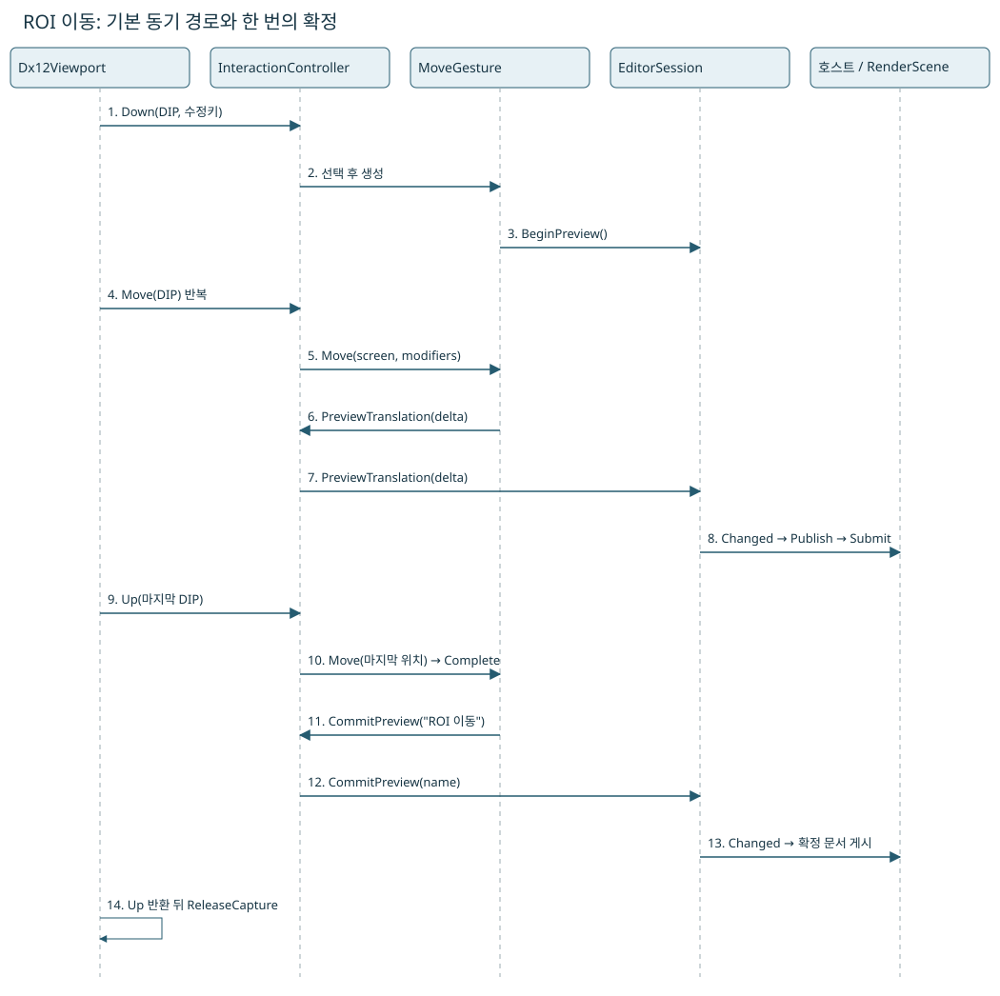
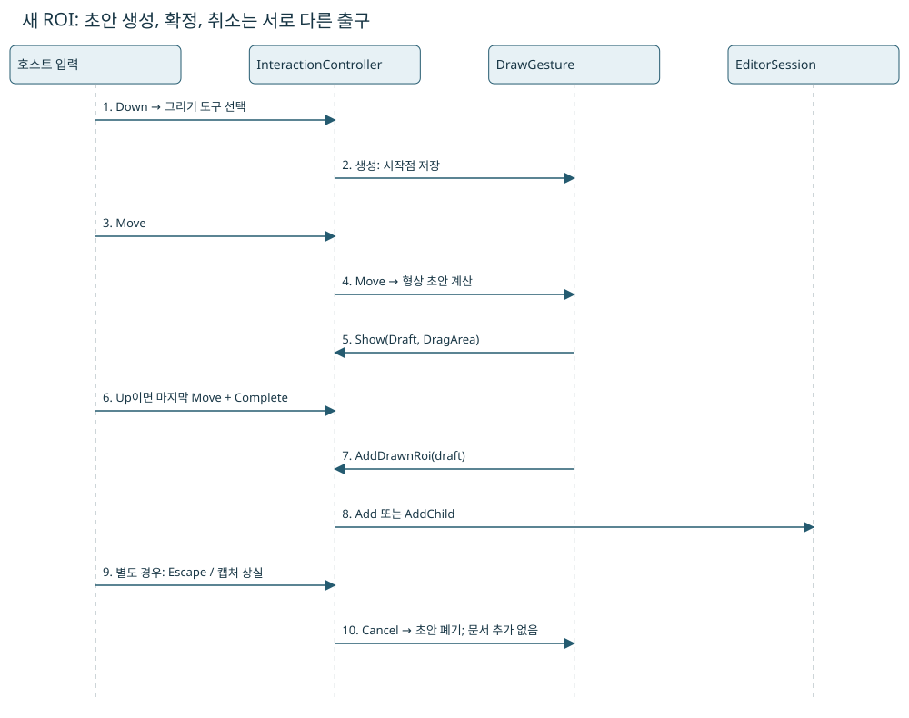
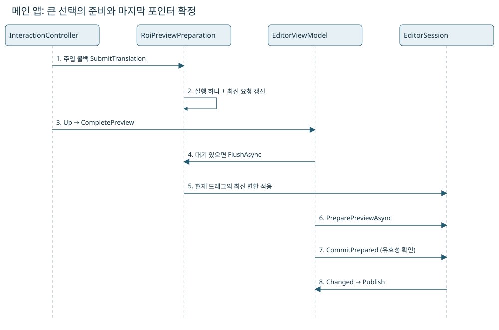

05. ROI·선택·Undo/Redo
마우스 한 번이 문서의 변경 한 번이 되기까지
현재 UI에서 주황색 복수 선택은 이동·삭제할 수 있고 회전은 제공하지 않습니다. 실제 그룹 하나와 ROI 하나는 회전할 수 있습니다. 부모 벽에 닿은 드래그는 벽을 따라 미끄러지며 Shift를 누르면 원래 축을 지킵니다. 단일 선택은 바로 게시하고 자손 변환 자료는 실제 드래그에서 준비합니다. 4만 ROI 측정과 검증.
먼저 움직여 보고, 실행 코드를 따라가세요
ROI를 누르고 → 끌고 → 놓으면 무슨 일이 생길까요?
선택된 사각형 한 개와 2배 확대를 사용합니다. 왼쪽은 보이는 위치, 오른쪽은 그 단계에서 실행되는 클래스와 코드입니다.
JavaScript를 켜면 직접 드래그하거나 자동 재생할 수 있습니다. 아래 정적 시퀀스 그림은 JavaScript 없이도 읽을 수 있습니다.
- ① 누르기
- ② 끌기
- ③ 놓기
- 취소
━ 실선: 보이는 ROI┄ 점선: 확정된 위치
- 문서에 확정된 중심
- 가로 100 · 세로 80 px
- 미리보기 이동량
- 가로 0 · 세로 0 px
- 지금 보이는 중심
- 가로 100 · 세로 80 px
- 이번 실습의 이동 이력
- 0개
가상 화면의 포인터: 가로 200 · 세로 160 DIP
준비 · 아직 누르지 않았습니다
먼저 재생하거나 다음 단계로 진행해 보세요.
입력 대기 → 아직 이동 제스처 없음
단계별 실제 코드
// 사각형을 누르면 실행 코드를 보여 줍니다.아래 본문의 전체 코드창에서 주변 구현도 확인할 수 있습니다.
이 그림은 기본 동기 경로의 교육 모형입니다. 실제 WPF·C#·GPU를 실행하지 않습니다. 그림의 한 단위를 가상 화면1DIP로 읽으며 브라우저의 표시 크기와 구별합니다. Shift 축 제한·회전·다중 선택은 생략하고, 이동은 이미지 안으로 제한합니다. 실제 코드의 Shift 분기는 그대로 표시합니다.
한 단계씩 확인할 결과
처음부터 ‘다음 단계’를 세 번 누릅니다. 누르기에서는 확정 중심100·80과 이력0이 유지됩니다. 끌기에서는 보이는 중심112·86으로 바뀌지만 확정 중심은 그대로입니다. 놓기에서는 마지막 포인터를 반영해 중심120·90으로 확정되고 이력1이 됩니다. 끌기 직후 취소하면 중심100·80으로 돌아가며 이력0이 유지됩니다. 이 숫자는 원본 px입니다.
먼저 이 장면 하나만 생각하세요
끌다가 취소하면 처음 위치로 돌아가야 합니다
2장에서처럼 ROI 중심을 가로 100px·세로 80px에서 가로 120px·세로 90px로 끕니다. 그런데 놓기 직전에 Escape를 눌렀습니다. 화면에 잠깐 보였던 위치를 문서의 확정 위치로 남겨도 될까요?
기억할 한 문장드래그 한 번은 미리보기 여러 번과 확정 한 번으로 나눕니다.
- Down · 시작 기억
어떤 ROI를 편집하는지와 시작 상태를 기억합니다. 아직 이동을 끝낸 것은 아닙니다.
- Move · 바뀔 모습 표시
시작점 기준의 이동량으로 미리보기를 갱신합니다. 포인터 이벤트마다 완료된 이동 이력을 쌓지 않습니다.
- Up 또는 Escape · 끝 결정
Up에서는 마지막 포인터 위치까지 반영해 확정합니다. Escape에서는 미리보기를 취소합니다. 둘은 같은 종료 처리가 아닙니다.
잠깐, 답을 보기 전에 예상해 보세요
Move가 열 번 왔다가 Escape를 눌렀습니다. 이 드래그 때문에 Undo할 이동 기록이 열 개 생겨야 할까요?
예상과 비교하기
아니요. 취소한 드래그는 확정된 이동 기록을 추가하지 않습니다. 중심은 원래 위치로 돌아갑니다. Up으로 확정했다면 여러 미리보기를 한 번의 편집으로 기록합니다. 기존에 있던 다른 편집 이력과 구별하세요.
한 번의 드래그를 끝까지 따라가기
예제에서는 이미 선택된 ROI 한 개를 움직이고, 호스트가 별도 비동기 콜백을 주입하지 않았다고 가정합니다. 마우스를 누른 순간 문서를 확정하지 않습니다. 시작 상태를 기억하고, 움직이는 동안 화면에 적용할 이동량을 바꾼 뒤, 놓는 순간 마지막 위치로 한 번 확정합니다.

Mermaid다이어그램 원문(Mermaid)
sequenceDiagram
participant V as Dx12Viewport
participant I as InteractionController
participant G as MoveGesture
participant E as EditorSession
participant H as Host
V->>I: Down(screenDip, modifiers)
I->>G: create after selection
G->>E: BeginPreview()
loop pointer moves
V->>I: Move(screenDip)
I->>G: Move(screenDip)
G->>I: PreviewTranslation(delta)
I->>E: PreviewTranslation(delta), default path
E-->>H: Changed
H->>V: Submit(RenderScene with TransformPreview)
end
V->>I: Up(final screenDip)
Note over I: clear active gesture before callbacks
I->>G: Move(final position)
I->>G: Complete()
G->>I: CommitPreview(name)
I->>E: CommitPreview(name), default path
E-->>H: Changed
Note over V: ReleaseCapture after Up returns
- Down:
Dx12Viewport.WndProc가 입력을 DIP로 바꿉니다.InteractionController는 핸들·도구·선택 상태로 제스처를 고릅니다. 이동이면MoveGesture를 생성하며 기반 생성자가BeginPreview를 호출합니다. - Move: 시작 화면점으로부터 지금까지의 거리를 초기 배율로 나눕니다. 직전 Move부터의 거리를 누적하지 않습니다. 같은 포인터가 두 번 전달돼도 두 번 더 움직여서는 안 되기 때문입니다.
- 표시: 이동·회전은
TransformPreview에 변환을 두고 기존 ROI 데이터를 참조합니다. 호스트의Publish가 이 변환을RenderScene에 넣어야 화면이 바뀝니다. Resize는 미리보기 상태에 새 형상을 게시하는 경로이므로 모든 제스처가 동일한 저장 방식을 쓴다고 일반화하지 않습니다. - Up: 컨트롤러가 활성 제스처를 먼저 비운 뒤 마지막 위치의
Move와Complete를 호출합니다. 확정 실패는Cancel후 다시 예외를 전달하고, 임시 표시를 정리합니다. 창은 그 뒤 마우스 캡처를 놓습니다. - Undo: 세션의 이력 책임이 직전 확정 편집을 되돌립니다. 이동 이벤트마다 이력을 넣지 않았기 때문에 드래그 한 번을 한 번에 취소할 수 있습니다. 실제 변화가 없는 드래그는 불필요한 이력을 만들지 않습니다.
Changed는 “다시 읽고 게시할 내용이 있다”는 알림입니다. 곧바로 GPU 표시가 끝났다는 신호가 아닙니다. CPU 상태 변경·장면 제출·실제 Present 완료는 서로 다른 시점입니다.
도형과 문서는 다르다
“사각형의 좌표만 저장하면 편집기가 되나요?” 종이에 사각형 두 개를 그릴 수는 있지만 어느 것이 선택되었는지, 누가 부모인지, 삭제를 되돌릴 때 무엇을 복구할지는 좌표만으로 알 수 없습니다. ‘모양’, ‘정체성’, ‘모음의 규칙’, ‘현재 편집 상태’를 구별해야 합니다.
RoiGeometry는 중심·크기·각도·도형을 나타냅니다. Roi는 그 형상에 ID, 이름, ParentId, 필터, 마스크 등 편집 의미를 더합니다. DocumentState는 ROI 사전, 선택, 이미지 참조, 화면 변환과 반복 ROI 배치를 함께 가진 한 시점의 상태입니다.
ID는 ‘누구인가’, 형상은 ‘어디에 어떻게 놓였나’입니다. 이동했다고 ID가 바뀌면 선택·이력·검사 연결을 잃습니다. 객체 참조 동일성은 ‘같은 메모리 객체인가’, 값 동등성은 ‘내용이 같은가’라는 서로 다른 질문입니다. 보관 GPU 캐시는 불변 블록의 참조 동일성을 이용하므로 편집 없이 매번 같은 값의 블록을 새로 만들면 재사용을 깨뜨릴 수 있습니다.
동일한 모양이어도 다른 ROI입니다
같은 위치와 크기의 사각형 두 개라도 ID가 다르면 서로 다른 ROI입니다. 하나를 삭제할 때 다른 것까지 사라지면 안 됩니다. 기하는 위치와 포함 여부를 답하고, ROI는 ID와 속성을 가지며, 문서는 부모 관계와 모음을 관리하고, 편집 세션은 선택·미리보기·이력을 연결합니다.
불변 스냅샷은 ‘이 시점의 상태를 나중에 몰래 바꾸지 않겠다’는 약속입니다. 매번 영상 픽셀과 ROI 전부를 깊은 복사한다는 뜻은 아닙니다. 바뀌지 않은 데이터는 공유하고 바뀐 부분과 참조만 새로 구성할 수 있습니다. 공유되는 내부 데이터까지 수정 가능하면 이 약속이 깨집니다.
실제 ROI 하나로 연결하기: with → 불변 상태 → Undo/Redo
“ROI 이름을 바꿨다가 Undo하면 옛 이름은 어디서 다시 나오나요?” 이 절에서는 도형은 그대로 두고 이름만 바꿉니다. 이동 계산을 잠시 빼면 객체 복사와 이력의 역할을 따로 볼 수 있습니다. 4장의 class·record 비교표를 먼저 읽어도 좋습니다.
1. record 선언은 무엇을 만들어 주나요?
아래는 실제 Roi 선언입니다. 괄호 안의 Id, Name, Geometry 등은 생성자 인자이면서 컴파일러가 만드는 공개 속성의 이름입니다. 이 record class의 위치 매개변수에는 get/init 속성이 생성됩니다. sealed는 상속을 막으며, init은 생성·초기화 과정에서 설정하도록 제한합니다.
C#실제 Roi 선언: 이름과 형상은 ROI 값의 일부
public sealed record Roi(Guid Id, string Name, RoiGeometry Geometry, Guid? ParentId, bool IsGroup, long Order)
{
public ImmutableArray<MaskRegion> Masks { get; init; } = [];
public RoiSearchRange? SearchRange
{
get; init;
}
public bool IsNameVisible { get; init; } = true;
public FilterSettings Filter
{
get;
init;
} = new(RoiFilterKind.None);
}이미 만든 ROI에 beforeRoi.Name = "검사 영역";을 실행하는 것은 허용되지 않습니다. 대신 beforeRoi with { Name = "검사 영역" }으로 새 ROI 값을 만듭니다. 여기서 with는 “기존 값을 바탕으로, 중괄호에 쓴 부분만 바꾼 복사본을 달라”는 표현입니다. 원본 변수에 새 값을 대입하는 명령도, 문서에 저장하는 명령도 아닙니다.
2. 새 객체와 새 ROI는 같은 말이 아닙니다
실습의 beforeRoi는 원본, candidate는 이름을 바꾼 후보입니다. 둘은 메모리에서 다른 객체지만 Id는 같습니다. 따라서 이 프로젝트에서는 같은 ROI의 서로 다른 편집 상태입니다. ROI를 하나 더 추가한 것으로 세지 않습니다.
| 관찰 대상 | beforeRoi | candidate |
|---|---|---|
| 객체 참조 | 기존 ROI 객체 | 새 ROI 객체 |
| Id | 기존 ID | 같은 ID |
| Name | ROI 001 | 검사 영역 |
| Geometry | 바꾸지 않았으므로 같은 형상 객체를 참조 | |
| 현재 문서에 들어 있는 값 | 아직 beforeRoi | 후보만 만들었으므로 아직 들어 있지 않음 |
ReferenceEquals는 “같은 객체를 가리키나?”를 묻고, Roi의 ==는 “record 값이 같나?”를 묻습니다. beforeRoi with { }처럼 아무 속성도 바꾸지 않은 복사본은 다른 참조이지만 같은 값으로 비교됩니다. 이름을 바꾼 복사본은 Id가 같아도 record 전체 값은 다릅니다. 도메인의 동일성(Id), 참조 동일성, 값 동등성은 세 가지 질문입니다.
3. 불변은 ‘아무것도 바꿀 수 없다’가 아니라 ‘옛 값을 덮어쓰지 않는다’입니다
같은 EditorSession의 State가 새 문서를 가리키도록 바뀔 수 있습니다. 이것과 기존 DocumentState에 보관된 ROI 값을 덮어쓰는 것은 다릅니다. 옛 문서를 가리키는 변수가 있으면 여전히 옛 이름을 읽습니다. 문서의 불변 사전은 새 사전을 만들 때 바뀌지 않은 내부 자료를 공유할 수 있으므로 모든 ROI를 새로 만드는 방식이 아닙니다.
with는 얕은 복사입니다. “바깥 ROI 객체는 새로 만들지만 Geometry 같은 내부 참조는 그대로 가져온다”는 뜻입니다. 지금은 이름만 바꾸므로 같은 형상을 공유해도 됩니다. 하지만 record 안에 수정 가능한 List<T>가 있었다면 복사본에서 그 리스트를 수정할 때 원본에서도 같은 변경이 보일 수 있습니다. init은 리스트 참조의 재설정을 제한할 뿐 리스트 내부의 Add까지 막지 않습니다.
현재 Roi의 Masks는 ImmutableArray<MaskRegion>, 문서의 Rois는 ImmutableDictionary<Guid, Roi>이며 RoiGeometry의 Center 등은 get 전용입니다. 따라서 geometry with { Center = ... }처럼 모든 속성을 마음대로 바꿀 수 있는 것도 아닙니다. 형상 변경은 프로젝트의 기하·변환 API를 사용해야 합니다. 또한 DocumentState 내부에는 지연 계산 캐시가 있습니다. 여기서 불변이라는 말은 편집 내용의 과거 값이 유지되는 계약이지 모든 내부 필드가 영원히 쓰이지 않는다는 뜻이 아닙니다.
4. 실제 Rename을 안쪽부터 읽으세요
C#EditorSession.Rename: 후보를 문서 편집으로 확정
public void Rename(Guid id, string name)
{
if (string.IsNullOrWhiteSpace(name) || name.Length > 256)
{
throw new ArgumentException("이름은 1–256자여야 합니다.", nameof(name));
}
Commit("이름 변경", State.WithRois(State.Rois.SetItem(id, State.Rois[id] with
{
Name = name.Trim()
}), [id]));
}State.Rois[id] with { Name = name.Trim() }: 해당 ROI의 새 이름 값을 만듭니다. 앞의 검증은 공백 이름과 256자를 넘는 이름을 거부합니다.State.Rois.SetItem(id, ...): 같은 ID 자리에 새 ROI를 넣은 불변 사전을 얻습니다. 기존 사전을 고치지 않습니다.State.WithRois(..., [id]): 바뀐 ID를 알면서 새 문서 상태와 색인 갱신 정보를 구성합니다.[id]는 변경된 ID 하나를 담는 컬렉션 식입니다.Commit("이름 변경", ...): 전후 차이를 이력에 등록한 뒤 현재 상태를 게시합니다. 앞의 세 단계만으로는 이력 확정이 끝나지 않습니다.
문법을 연습한다고 UI에서 Roi를 직접 복사해 끼워 넣으면 이름 검증·이력·화면 알림을 빠뜨리기 쉽습니다. 앱 기능을 만들 때는 위의 공개 메서드 session.Rename(id, name)을 호출하세요. 문서 데이터는 정보를 알고 있고, 세션은 편집 요청을 조정하며, 이력은 되돌릴 순서를 압니다. 이것이 이 예제에서 책임을 나누는 이유입니다.
C#EditorSession.Commit: 이력 등록이 성공한 뒤 게시
private void Commit(string name, DocumentState next, bool replacesImage = false)
{
if (_previewStart is not null)
{
throw new InvalidOperationException("진행 중인 편집을 먼저 완료하세요.");
}
if (!replacesImage && State.SameContent(next) && State.Image == next.Image)
{
return;
}
var edit = new DocumentEdit(name, State, next, replacesImage);
if (edit.IsEmpty)
{
return;
}
// 이력 예산 검사와 Redo 분기 처리가 성공한 뒤에만 새 문서를 게시한다.
_history.Push(edit, State, next);
Publish(next);
}DocumentEdit 생성은 “어떤 값이 달라졌는가”를 계산합니다. _history.Push가 예산 검사와 Redo 갈래 처리를 마친 뒤 Publish가 현재 State를 바꾸고 Changed를 알립니다. 동일한 이름을 다시 넣어 실질적인 차이가 없으면 이력 한 건을 추가하지 않습니다. Changed는 새 상태를 읽으라는 알림이며 GPU 표시 완료 알림은 아닙니다.
5. Undo는 역산이 아니라 보관한 Before를 복원합니다
RoiChange는 Id, Before, After를 가진 record입니다. 이름 변경에서 Before는 옛 이름의 ROI, After는 새 이름의 ROI입니다. 추가에서는 Before가 null, 삭제에서는 After가 null입니다. 이 차이를 모은 DocumentEdit은 class이고, 이력 목록과 현재 커서를 관리하는 EditHistory도 class입니다.
| 행동 | 세션이 보여 주는 이름 | 이력의 역할 |
|---|---|---|
| 처음 ROI 추가 | ROI 001 | 추가 이력 존재 |
| with로 후보만 생성 | ROI 001 | 변화 없음 |
| Rename으로 확정 | 검사 영역 | Before → After 차이 한 건 등록 |
| Undo | ROI 001 | 같은 편집을 역방향으로 적용 |
| Redo | 검사 영역 | 같은 편집을 정방향으로 적용 |
| Undo 후 다른 이름으로 Rename | 새 검사 영역 | 기존 미래의 Redo 갈래를 버리고 새 편집 등록 |
C#DocumentEdit.Apply: forward에 따라 After 또는 Before 선택
public DocumentState Apply(DocumentState state, bool forward, CancellationToken cancellationToken = default)
{
cancellationToken.ThrowIfCancellationRequested();
var rois = state.Rois.ToBuilder();
foreach (var change in Changes)
{
cancellationToken.ThrowIfCancellationRequested();
var value = forward ? change.After : change.Before;
if (value is null)
{
rois.Remove(change.Id);
}
else
{
rois[change.Id] = value;
}
}
var ids = Changes.Select(c => c.Id);
var geometry = _refitSpatial ? state.WithRigidRois(rois.ToImmutable(), ids, cancellationToken) : state.WithRois(rois.ToImmutable(), ids);
var result = geometry with
{
Selection = forward ? _afterSelection : _beforeSelection,
Image = _changesImage ? (forward ? _afterImage : _beforeImage) : state.Image,
Viewport = _changesImage ? (forward ? _afterView : _beforeView) : state.Viewport
};
cancellationToken.ThrowIfCancellationRequested();
return _repeated.Apply(result, forward);
}forward가 true이면 Redo 방향이므로 After, false이면 Undo 방향이므로 Before를 선택합니다. null이면 그 ID를 제거하고 값이 있으면 그 ID 자리에 복원합니다. 이미지 교체를 되돌리는 경우가 아니면 현재 Viewport를 유지하므로 이름을 Undo했다고 화면 확대까지 예전 값으로 돌아가지 않습니다.
매번 이 루프가 반드시 실행되는 것은 아닙니다. 현재 EditHistory는 최근 시작·목표 상태 한 쌍을 재사용할 수 있고, HistoryStep이 준비한 결과는 이력 버전과 현재 문서가 맞는지 검증한 뒤 확정합니다. record나 with 자체에는 이력 저장, Undo 버튼, 충돌 검증 기능이 없습니다. 이것들은 편집·이력 코드가 함께 구현합니다. 복원 결과는 내용으로 확인하세요. Undo 후 DocumentState가 옛 변수와 반드시 같은 참조라는 보장은 필요하지 않습니다.
6. 그대로 실행하고 결과를 설명해 보기
아래는 현재 Core 프로젝트를 직접 참조하는 작은 콘솔 실습의 전체 코드입니다. 가짜 EditorSession을 만들거나 이력 알고리즘을 다시 구현하지 않습니다. 도형 하나를 추가하고 후보 생성, 실제 Rename, Undo, Redo, 새 갈래를 순서대로 확인합니다. Require 조건이 틀리면 예외로 종료합니다.
C#실제 ROI와 세션으로 확인하는 전체 실습
using VisionCanvas.Core.Editing;
using VisionGeometry;
var session = new EditorSession();
var sameSession = session;
var roiId = session.Add(new RoiGeometry(new PointD(100, 80), 60, 40, 0));
var beforeState = session.State;
var beforeRoi = beforeState.Rois[roiId];
var originalName = beforeRoi.Name;
// with는 새 값을 만들 뿐 세션에 편집을 요청하지 않습니다.
var candidate = beforeRoi with { Name = "검사 영역" };
Require(beforeRoi.Name == originalName, "기존 ROI 이름 보존");
Require(candidate.Name == "검사 영역", "새 ROI 이름만 변경");
Require(!ReferenceEquals(beforeRoi, candidate), "새 ROI는 다른 참조");
Require(beforeRoi.Id == candidate.Id, "문서에서는 같은 ID의 ROI");
Require(ReferenceEquals(beforeRoi.Geometry, candidate.Geometry), "바꾸지 않은 형상은 공유");
Require(ReferenceEquals(session.State, beforeState), "with만으로 문서가 바뀌지 않음");
// 참조가 다른 것과 값이 다른 것은 별개의 질문입니다.
var sameValue = beforeRoi with { };
Require(!ReferenceEquals(beforeRoi, sameValue) && beforeRoi == sameValue,
"별도 객체여도 record 값 비교는 같을 수 있음");
// 실제 공개 편집 API가 검증, 새 문서 생성, 이력 기록, 게시를 수행합니다.
session.Rename(roiId, "검사 영역");
var afterState = session.State;
var afterRoi = afterState.Rois[roiId];
Require(ReferenceEquals(session, sameSession), "편집을 관리하는 세션은 같은 객체");
Require(!ReferenceEquals(beforeState, afterState), "편집 후 문서는 새 상태");
Require(beforeState.Rois[roiId].Name == originalName, "옛 문서에서도 옛 이름 유지");
Require(afterRoi.Name == "검사 영역" && beforeRoi != afterRoi, "이름 변경은 ROI 값의 차이");
// 실제 DocumentEdit으로 전후 차이를 들여다봅니다. 세션 이력에 다시 넣지는 않습니다.
var difference = new DocumentEdit("이름 변경 관찰", beforeState, afterState);
Require(difference.Changes.Length == 1, "ROI 하나의 차이를 기록");
var change = difference.Changes[0];
Require(change.Id == roiId && change.Before == beforeRoi && change.After == afterRoi,
"RoiChange가 ID와 Before/After를 보관");
session.Undo();
Require(session.State.Rois[roiId].Name == originalName && session.CanRedo,
"Undo는 이름 변경 전 값을 복원");
Require(afterState.Rois[roiId].Name == "검사 영역", "Undo도 보관한 과거 객체를 덮어쓰지 않음");
session.Redo();
Require(session.State.Rois[roiId].Name == "검사 영역", "Redo는 변경 후 값을 복원");
session.Undo();
session.Rename(roiId, "새 검사 영역");
Require(!session.CanRedo, "Undo 뒤 새 편집은 기존 Redo 갈래 제거");
session.Rename(roiId, "새 검사 영역");
session.Undo();
Require(session.State.Rois[roiId].Name == originalName, "같은 이름 재설정은 이력 추가 없음");
static void Require(bool condition, string explanation)
{
if (!condition)
{
throw new InvalidOperationException(explanation);
}
Console.WriteLine($"PASS: {explanation}");
}PowerShell저장소 루트에서 실행
dotnet run --project manual/labs/RecordsHistory/RecordsHistory.csproj -c Release정상 실행이면 18개의 PASS가 나옵니다. 먼저 코드를 펼치지 않고 결과를 예상해 보세요. 새 편집 없이 with만 실행했다면 Undo로 그 후보를 취소할 수 있을까요? 답은 아니요입니다. 후보는 문서나 이력에 들어간 적이 없습니다.
앞의 ROI 드래그 그림으로 돌아가서 미리보기와 확정을 다시 관찰하기 · 그리기와 취소에서는 무엇이 남는지 비교하기
드래그 중에는 왜 미리보기를 쓰나
“마우스가 움직일 때마다 ROI 좌표를 확정하면 간단하지 않나요?” 종이에 옮길 위치를 연필로 가볍게 표시하고 손을 놓을 때 확정한다고 생각해 보세요. 드래그 중간의 수많은 위치는 사용자가 결정한 수많은 편집이 아니라, 한 번의 이동을 고르는 과정입니다.
시작 상태→이동 이벤트
공통 변환 preview→놓음: 한 번 확정
Esc: 취소
30만 ROI를 움직이는 동안 모든 ROI와 공간 색인을 매 포인터 이벤트마다 다시 만들면 비용이 큽니다. 기존 불변 형상과 공통 이동·회전 값을 공유하여 표시하고, 놓는 시점에 문서와 이력을 한 번 확정합니다. 이 경로는 렌더뿐 아니라 히트 테스트·속성·필터도 동일한 변환을 알아야 합니다.
InteractionController는 입력을 도구에 전달합니다. EditorSession이 편집 시작/취소/확정을 관리하고 RoiTransformPreview가 공통 변환을 표현합니다. 경계 밖으로 나갔다가 다시 들어오는 끝 각도만 검사하면 중간에 이미지 밖을 통과할 수 있으므로 회전 허용 구간 준비도 필요합니다.
미리보기와 확정의 차이를 상태로 쓰기
| 입력 | 화면 | 확정 문서와 이력 |
|---|---|---|
| 드래그 시작: | 기준 상태 기억 | 기존 상태 유지 |
| 중간: 이동 +2, +4, +7 | 기준 상태에 현재 변환을 적용해 표시 | 중간 위치마다 이력을 추가하지 않음 |
| 손 놓기: +7 | 한 번의 이동으로 확정 | |
| 또는 Esc | 으로 복귀 | 미리보기 취소 |
위 +2,+4,+7은 시작점에서 잰 현재 이동량입니다. 셋을 더해 +13으로 만들면 안 됩니다. Undo 한 번으로 드래그 이전으로 돌아가야 하는 사용자 의미와, 대량 ROI를 매 입력마다 모두 고치지 않으려는 비용 문제가 같은 설계로 연결됩니다.
입력 우선순위: 클릭 위치만으로 결정하지 않는다
| 조건 / 입력 | 현재 처리 | 초보자가 놓치기 쉬운 이유 |
|---|---|---|
| 그리기 도구의 폴리곤 클릭 | 기존 초안을 이어서 점 추가/폐합 | 일반 Down의 Cancel을 먼저 하면 이전 점이 사라짐 |
| 미니맵 패널 클릭 | 그림 안은 MinimapGesture, 바깥 여백은 NoGesture | 영상 ROI 클릭으로 통과시키지 않음 |
| 가운데 버튼 / Pan 도구 | PanGesture | NavigationOnly보다 먼저 판단해 탐색 허용 |
| NavigationOnly | 편집 제스처 시작하지 않음 | 이동 가능한 화면과 편집 가능한 문서는 다른 권한 |
| Draw / 유효한 Mask 대상 | DrawGesture / MaskDrawGesture | 마스크는 선택 ROI와 원본 영상의 동일성도 완료 시 검사 |
| Select, Alt 없음 | 회전/resize 핸들 먼저 → 실제 ROI hit | 핸들과 ROI 몸체가 가까워도 핸들 조작이 우선 |
| Select, Alt 있음 | 핸들을 건너뛰고 겹친 후보 순환 | 면적·표시 순서 등을 이용하는 실제 코드 확인 |
| Ctrl 클릭 / Shift 클릭 | 토글 선택 / 필요한 경우 선택 추가 | Ctrl 토글은 즉시 이동 제스처를 시작하지 않음 |
| 빈 곳 드래그 | MarqueeGesture로 범위 선택 | 화면 선택 상자를 완료 때 원본 영역으로 변환 |
| 선택 그룹 내부 드래그 | 선택 그룹과 자손을 함께 이동 | 수정 키가 없으면 내부의 작은 ROI가 선택을 가로채지 않음 |
| 더블클릭 | 겹친 계층의 실제 ROI/그룹을 작은 항목부터 순환 | 목록으로 돌아가지 않고 내부 그룹을 고름. 독립 ROI와 반복 셀은 실제 hit 선택 유지 |
이 표는 일반·반복 ROI가 공존하는 현재 코드의 읽기 안내입니다. 반복 셀은 일반 사전에 1억 개의 Roi 객체를 넣는 방식이 아닙니다. RepeatedRoiCell은 배치 ID와 셀 번호로 대상을 가리키고, 선택은 압축된 셀 범위를 유지합니다. 클릭 결과가 일반 ROI ID인지 반복 셀인지 먼저 구분해야 합니다.
그리기와 취소: 화면에 보인 것과 문서에 저장된 것

Mermaid다이어그램 원문(Mermaid)
sequenceDiagram
participant H as Host input
participant C as InteractionController
participant D as DrawGesture
participant E as EditorSession
H->>C: Down / Move
C->>D: create / Move
D->>C: Show(Draft, DragArea)
alt valid draft and pointer released
H->>C: Up
C->>D: final Move then Complete
D->>C: AddDrawnRoi(draft)
C->>E: Add or AddChild
else cancel before release
H->>C: Cancel
C->>D: Cancel
Note over E: No ROI was added
end
그리기 중의 Overlay.Draft는 임시 종이 위 스케치라고 생각하세요. 아직 문서 사전의 ROI가 아니므로 취소할 때 삭제 명령을 기록할 필요가 없습니다. 유효한 크기로 마우스를 놓았을 때만 AddDrawnRoi가 일반/자식 추가를 요청하고 선택 도구로 돌아갑니다. 너무 작은 드래그는 초안이 없어서 추가하지 않습니다.
기존 ROI의 이동 취소는 다릅니다. EditGesture.Cancel은 EditorSession.CancelPreview로 시작 문서와 현재 탐색 위치를 복원합니다. 드래그 도중 화면을 탐색한 위치까지 무조건 옛 뷰포트로 돌리는 것으로 설명하면 틀립니다.
캡처는 마우스가 창 밖으로 나가도 현재 드래그의 입력을 받기 위한 장치입니다. ReleaseCapture는 다시 CaptureChanged를 일으킬 수 있어, 정상 Up을 끝내기 전에 캡처를 놓으면 취소가 끼어들 수 있습니다. 현재 코드는 먼저 Up을 끝내고 캡처를 놓습니다. 포커스 상실/다른 창의 캡처 획득은 진행 중 제스처를 취소합니다. Escape는 호스트 KeyAction 연결도 필요합니다.
이력의 네 책임을 따라 읽기
“Undo는 변경 전 객체를 스택에 넣으면 끝 아닌가요?” 무엇을 되돌릴지와 언제 되돌려도 안전한지가 남습니다. ROI 이동을 되돌릴 때 사용자가 그 뒤에 조절한 화면 확대까지 되돌릴지, 늦게 준비된 결과가 최신 편집을 덮어도 되는지 먼저 정해야 합니다.
| 파일 | 질문 |
|---|---|
| DocumentEdit.cs | 전후 무엇이 바뀌었고 정방향/역방향으로 어떻게 적용하나? |
| HistoryStep.cs | 어느 이력 버전에서 어떤 Undo/Redo를 준비하나? |
| PreparedHistoryStep.cs | 작업 스레드가 만든 결과의 시작·목표 상태는 무엇인가? |
| EditHistory.cs | 현재 위치·예산·Redo 분기와 확정 유효성을 어떻게 관리하나? |
텍스트이력의 네 책임을 따라 읽기
편집 목록: [추가, 이동, 회전]
현재 커서: 3 → Undo 회전 → 커서 2
새 ‘크기 변경’ → [추가, 이동, 크기 변경]
이전 ‘회전’ Redo 분기는 제거작업 스레드가 Undo를 준비하는 동안 사용자가 문서를 바꾸면 준비 결과는 오래된 값일 수 있습니다. 이력 identity·revision·cursor, 문서 내용·선택·이미지를 검증한 뒤 확정합니다. 취소 토큰만으로 이 검증을 대신할 수 없습니다.
ROI만 바꾼 이력은 현재 탐색 위치를 유지합니다. 이미지 교체 이력은 기록된 뷰와 이미지가 함께 복원되어야 합니다. 픽셀 전체를 이력마다 복사하는 대신 원본 참조와 독립 재열기 수명을 다루므로 파일이 사라지면 복원에 실패할 수 있습니다. 실패를 숨기고 이력 커서만 움직이면 안 됩니다.
Undo 후 새 편집은 갈림길입니다
이력이 [추가 A, 이동 B, 회전 C]이고 C를 Undo했다면 현재 상태는 B까지입니다. 여기서 삭제 D를 확정하면 이후 길은 [A,B,D]가 됩니다. 예전 미래인 C를 그대로 Redo하면 D의 전제가 무너질 수 있어 이후 이력을 정리합니다.
또 다른 문제는 시간입니다. 버전 5에서 준비를 시작한 작업이 버전 6 편집 뒤에 끝날 수 있습니다. 완료되었다는 사실만으로 현재 문서에 적용할 수는 없습니다. 준비의 기준 상태가 아직 맞는지 검증하고 문서·관련 레시피가 한 순서로 확정되어야 합니다. 이것이 단순 스택 연산과 적용 정책을 분리해 읽는 이유입니다.
읽은 순서대로 실제 코드를 확인하기
아래 코드는 의사 코드가 아니라 현재 파일 전체입니다. 먼저 Down·Up을 읽고, 이어서 EditGesture와 MoveGesture를 읽으세요. 다른 도구의 전체 구현은 같은 Interaction 폴더에 있습니다.
C#입력 컨트롤러 전체
using System.Collections.Immutable;
using VisionCanvas.Core.Editing;
using VisionCanvas.Core.Geometry;
using VisionGeometry;
using VisionImaging.Abstractions;
namespace VisionCanvas.Core.Interaction;
/// <summary>입력에 맞는 제스처를 선택하고 이동·확정·취소를 전달한다. 문서 변경과 이력은 EditorSession이 소유한다.</summary>
public sealed class InteractionController(EditorSession editor, Action<string>? commitPreview = null, Action<IEnumerable<Guid>>? selectRois = null,
Action<PointD, bool>? previewTranslation = null, Action<PointD, double>? previewRotation = null, Action<BoundsD, bool>? selectRegion = null) : IViewportInput
{
private const double RoiHitToleranceDip = 3;
private const double PolygonClosureDistanceDip = 8;
private IGesture? _activeGesture;
private EditorTool _tool;
private RoiShapeKind _drawShape;
private readonly List<PointD> _polygonPoints = [];
private ImageReference? _polygonStartImage;
private Guid? _drawParentId;
private bool _drawAsGroup;
private double _handleScale = HandleGeometry.DefaultScale;
/// <summary>화면 DIP 기준 핸들 크기와 클릭 범위를 함께 조절한다. ROI 형상과 이력은 바꾸지 않는다.</summary>
public double HandleScale
{
get => _handleScale;
set
{
HandleGeometry.ValidateScale(value);
if (_handleScale == value)
{
return;
}
_handleScale = value;
Show(Overlay);
}
}
public Guid? MaskTargetId
{
get; private set;
}
public MaskShape MaskShape
{
get; private set;
}
public void StartMask(MaskShape shape)
{
if (NavigationOnly || editor.IsPreviewing || editor.State.SelectionCount != 1 || editor.State.Selection.Count != 1)
{
return;
}
var id = editor.State.Selection.Single();
if (editor.State.IsGroupRoi(id) || editor.State.Rois[id].Masks.Length >= EditorSession.MaximumMasksPerRoi)
{
return;
}
MaskTargetId = id;
MaskShape = shape;
Tool = EditorTool.Mask;
}
public Guid? DrawParentId
{
get => _drawParentId;
set
{
Cancel();
_drawParentId = value;
_drawAsGroup = false;
Changed?.Invoke();
}
}
public bool DrawAsGroup
{
get => _drawAsGroup;
set
{
Cancel();
_drawAsGroup = value;
if (value)
{
_drawParentId = null;
}
Changed?.Invoke();
}
}
internal void AddDrawnRoi(RoiGeometry geometry)
{
if (DrawAsGroup)
{
editor.AddParent(geometry);
}
else if (DrawParentId is { } parentId)
{
if (!editor.State.Rois.TryGetValue(parentId, out var parent))
{
throw new ArgumentException("자식 ROI를 추가할 부모가 없습니다.");
}
if (!parent.Geometry.Contains(geometry))
{
throw new ArgumentException("자식 ROI는 부모 도형 안에 완전히 들어오도록 그리세요. 경계에 걸칠 수 없습니다.");
}
editor.AddChild(parentId, geometry);
}
else
{
editor.Add(geometry);
}
}
public RoiShapeKind DrawShape
{
get => _drawShape;
set
{
Cancel();
_drawShape = value;
Changed?.Invoke();
}
}
public int PolygonPointCount => _polygonPoints.Count;
public bool CanCompletePolygon => _polygonPoints.Count >= 3;
private double _viewportWidthDip;
private double _viewportHeightDip;
public MinimapLayout? Minimap => editor.State.Image is { } image ? MinimapLayout.Create(image.Width, image.Height, _viewportWidthDip, _viewportHeightDip) : null;
public void SetViewportSize(double width, double height)
{
if (width == _viewportWidthDip && height == _viewportHeightDip)
{
return;
}
_viewportWidthDip = width;
_viewportHeightDip = height;
if (_activeGesture is MinimapGesture || _polygonPoints.Count > 0)
{
Cancel();
}
}
public EditorTool Tool
{
get => _tool;
set
{
Cancel();
_tool = value;
Changed?.Invoke();
}
}
public InteractionOverlay Overlay
{
get;
private set;
} = new();
public bool IsDragging => _activeGesture is not null;
public bool NavigationOnly
{
get;
set;
}
public event Action? Changed;
internal EditorSession Editor => editor;
internal void PreviewTranslation(PointD delta, bool allowSlide)
{
if (previewTranslation is null)
{
editor.PreviewTranslation(delta, allowSlide);
}
else
{
previewTranslation(delta, allowSlide);
}
}
internal void PreviewRotation(PointD pivot, double degrees)
{
if (previewRotation is null)
{
editor.PreviewRotation(pivot, degrees);
}
else
{
previewRotation(pivot, degrees);
}
}
internal void CommitPreview(string name)
{
if (commitPreview is null)
{
editor.CommitPreview(name);
}
else
{
commitPreview(name);
}
}
internal void Select(IEnumerable<Guid> ids)
{
if (selectRois is null)
{
editor.Select(ids);
}
else
{
selectRois(ids);
}
}
internal void Show(InteractionOverlay overlay)
{
Overlay = overlay.HandleScale == HandleScale ? overlay : overlay with
{
HandleScale = HandleScale
};
Changed?.Invoke();
}
internal void SelectRegion(DocumentState baseline, BoundsD bounds, bool additive)
{
if (selectRegion is not null)
{
selectRegion(bounds, additive);
}
else if (!baseline.RepeatedRois.IsEmpty)
{
editor.SelectRegion(bounds, additive);
}
else
{
var ids = baseline.Snapshot.Spatial.Intersecting(bounds).Where(roi => roi.Geometry.Bounds is var box &&
bounds.Contains(new(box.Left, box.Top)) && bounds.Contains(new(box.Right, box.Bottom))).Select(roi => roi.Id);
Select(additive ? baseline.Selection.Union(ids) : ids);
}
}
public void Down(PointD screen, InputModifiers modifiers = InputModifiers.None, bool middle = false)
{
ValidateDraftImage();
if (!middle && !NavigationOnly && Tool == EditorTool.Draw && DrawShape == RoiShapeKind.Polygon &&
!(Minimap is { } panel && panel.Panel.Contains(screen)))
{
ContinuePolygon(screen);
return;
}
Cancel();
_activeGesture = StartGesture(screen, modifiers, middle);
Changed?.Invoke();
}
// 폴리곤의 여러 클릭은 하나의 초안이다. 일반 Down의 Cancel로 기존 점을 지우지 않는다.
private void ContinuePolygon(PointD screen)
{
_activeGesture?.Cancel();
_activeGesture = new NoGesture();
var imagePoint = RoiImageBounds.Clamp(editor.State.Viewport.ScreenToImage(screen), editor.State.Image);
if (PolygonClosure.Find(_polygonPoints, imagePoint) is { } closedPolygon)
{
CompletePolygon(closedPolygon);
return;
}
if (CanCompletePolygon && (editor.State.Viewport.ImageToScreen(_polygonPoints[0]) - screen).Length < PolygonClosureDistanceDip)
{
CompletePolygon();
return;
}
if (_polygonPoints.Count == 0)
{
_polygonStartImage = editor.State.Image;
}
if (_polygonPoints.Count == 0 || (_polygonPoints[^1] - imagePoint).Length > .000001)
{
_polygonPoints.Add(imagePoint);
}
ShowPolygonDraft();
}
private IGesture StartGesture(PointD screen, InputModifiers modifiers, bool middle)
{
// 미니맵 → 화면 이동 → 탐색 전용 → 그리기/마스크 → 선택 순서를 유지한다.
if (!middle && Minimap is { } map && map.Panel.Contains(screen))
{
return map.ImageBounds.Contains(screen) ? new MinimapGesture(editor, map, screen) : new NoGesture();
}
else if (middle || Tool == EditorTool.Pan)
{
return new PanGesture(editor, screen);
}
else if (NavigationOnly)
{
return new NoGesture();
}
else if (Tool == EditorTool.Draw)
{
return new DrawGesture(this, screen);
}
else if (Tool == EditorTool.Mask && MaskTargetId is { } maskTarget && editor.State.Rois.TryGetValue(maskTarget, out var owner))
{
return new MaskDrawGesture(this, owner, screen);
}
else
{
return StartSelectionGesture(screen, modifiers);
}
}
public void DoubleClick(PointD screen, InputModifiers modifiers = InputModifiers.None)
{
if (Tool != EditorTool.Select || NavigationOnly ||
(Minimap is { } map && map.Panel.Contains(screen)))
{
Down(screen, modifiers);
return;
}
Cancel();
// 계층 안의 더블클릭은 겹친 리프 → 안쪽 그룹 → 바깥 그룹 순서로 선택한다.
var hit = HitSelectableRoi(screen, modifiers.HasFlag(InputModifiers.Alt));
if (!modifiers.HasFlag(InputModifiers.Alt) && hit.Ordinary is { } ordinary &&
(editor.State.Rois[ordinary].ParentId is not null || editor.State.IsGroupRoi(ordinary)))
{
hit = HitSelectableRoi(screen, cycleSelection: true);
}
if (hit.Repeated is { } repeated)
{
editor.SelectRepeated(repeated);
}
else if (hit.Ordinary is { } id)
{
Select([id]);
}
_activeGesture = new NoGesture();
Changed?.Invoke();
}
private IGesture StartSelectionGesture(PointD screen, InputModifiers modifiers)
{
var state = editor.State;
var cycleSelection = modifiers.HasFlag(InputModifiers.Alt);
if (!cycleSelection)
{
var handleGesture = StartHandleGesture(state, screen);
if (handleGesture is not null)
{
return handleGesture;
}
// 화면에서 고른 그룹을 내부에서 잡아도 리프가 선택을 빼앗지 않는다.
if (modifiers == InputModifiers.None && state.SelectionCount == 1 && state.Selection.Count == 1 &&
state.Selection.Single() is var selected && state.IsGroupRoi(selected) &&
state.Rois[selected].Geometry.Contains(state.Viewport.ScreenToImage(screen)))
{
return new MoveGesture(this, screen);
}
}
var hit = HitSelectableRoi(screen, cycleSelection);
if (hit.Repeated is { } repeatedHit)
{
if (modifiers.HasFlag(InputModifiers.Control))
{
editor.SelectRepeated(repeatedHit, additive: true, toggle: true);
return new NoGesture();
}
if (!state.RepeatedSelection.TryGetValue(repeatedHit.BatchId, out var selectedCells) || !selectedCells.Contains(repeatedHit.Index))
{
editor.SelectRepeated(repeatedHit, additive: modifiers.HasFlag(InputModifiers.Shift));
}
return new MoveGesture(this, screen);
}
if (hit.Ordinary is { } roiId)
{
if (modifiers.HasFlag(InputModifiers.Control))
{
editor.Select(state.Selection.Contains(roiId) ? state.Selection.Remove(roiId) : state.Selection.Add(roiId), preserveRepeated: true);
return new NoGesture();
}
if (!state.Selection.Contains(roiId))
{
editor.Select(modifiers.HasFlag(InputModifiers.Shift) ? state.Selection.Add(roiId) : [roiId], preserveRepeated: modifiers.HasFlag(InputModifiers.Shift));
}
return new MoveGesture(this, screen);
}
return new MarqueeGesture(this, screen, modifiers != InputModifiers.None);
}
private IGesture? StartHandleGesture(DocumentState state, PointD screen)
{
// 회전/크기 핸들은 단일 ROI 또는 단일 그룹을 선택했을 때만 제공한다.
if (state.SingleRepeatedCell is { } cell)
{
var cellGeometry = state.RepeatedRois[cell.BatchId].Geometry(cell.Index);
if ((HandleGeometry.RotationHandle(cellGeometry, state.Viewport, HandleScale) - screen).Length < HandleGeometry.RotationHitRadiusDip * HandleScale)
{
return new RotateGesture(this, screen, cellGeometry.Center);
}
var handles = HandleGeometry.ResizeHandles(cellGeometry, state.Viewport);
for (var i = 0; i < handles.Count; i++)
{
if ((handles[i] - screen).Length < HandleGeometry.ResizeHitRadiusDip * HandleScale)
{
return new RepeatedResizeGesture(this, cell, cellGeometry, i, screen);
}
}
}
else if (state.SelectionCount == 1)
{
var selectedRoi = state.Rois[state.Selection.Single()];
if ((HandleGeometry.RotationHandle(selectedRoi.Geometry, state.Viewport, HandleScale) - screen).Length < HandleGeometry.RotationHitRadiusDip * HandleScale)
{
return new RotateGesture(this, screen, selectedRoi.Geometry.Center);
}
var handles = HandleGeometry.ResizeHandles(selectedRoi.Geometry, state.Viewport);
for (var i = 0; i < handles.Count; i++)
{
if ((handles[i] - screen).Length < HandleGeometry.ResizeHitRadiusDip * HandleScale)
{
return new ResizeGesture(this, selectedRoi, i, screen);
}
}
}
return null;
}
public void Move(PointD screen, InputModifiers modifiers = InputModifiers.None)
{
ValidateDraftImage();
if (_activeGesture is { } active)
{
active.Move(screen, modifiers);
}
else if (_polygonPoints.Count > 0)
{
ShowPolygonDraft(RoiImageBounds.Clamp(editor.State.Viewport.ScreenToImage(screen), editor.State.Image));
}
else if (!NavigationOnly && Tool != EditorTool.Mask)
{
var hit = HitOrdinaryRoi(screen);
if (Overlay.Hover != hit)
{
Show(Overlay with
{
Hover = hit
});
}
}
}
public void Up(PointD screen, InputModifiers modifiers = InputModifiers.None)
{
var active = _activeGesture;
// 확정 콜백에서 새 입력이 들어와도 방금 끝난 드래그를 다시 사용하지 않는다.
_activeGesture = null;
try
{
active?.Move(screen, modifiers);
active?.Complete();
}
catch
{
active?.Cancel();
throw;
}
finally
{
if (_polygonPoints.Count > 0)
{
ShowPolygonDraft();
}
else
{
Show(new());
}
}
}
public void Cancel()
{
var active = _activeGesture;
_activeGesture = null;
active?.Cancel();
_polygonPoints.Clear();
_polygonStartImage = null;
Show(new());
}
public void ValidateDraftImage()
{
if (Tool == EditorTool.Mask && (MaskTargetId is not { } id || !editor.State.Selection.Contains(id) ||
editor.State.SelectionCount != 1 || !editor.State.Rois.TryGetValue(id, out var owner) ||
editor.State.IsGroupRoi(id) || owner.Masks.Length >= EditorSession.MaximumMasksPerRoi))
{
Tool = EditorTool.Select;
}
if (_polygonPoints.Count > 0 && _polygonStartImage != editor.State.Image)
{
Cancel();
}
}
public void CompletePolygon()
{
ValidateDraftImage();
if (!CanCompletePolygon)
{
return;
}
CompletePolygon(PolygonClosure.Find(_polygonPoints, _polygonPoints[0]) ?? _polygonPoints.ToArray());
}
private void CompletePolygon(IEnumerable<PointD> points)
{
var geometry = RoiGeometry.Polygon(points);
AddDrawnRoi(geometry);
Tool = EditorTool.Select;
}
public void RemovePolygonPoint()
{
if (_polygonPoints.Count > 0)
{
_polygonPoints.RemoveAt(_polygonPoints.Count - 1);
}
ShowPolygonDraft();
}
private void ShowPolygonDraft(PointD? cursor = null)
{
if (cursor is { } point && PolygonClosure.Find(_polygonPoints, point) is { Length: >= 3 } closed)
{
Show(new(PolygonPoints: closed.Append(closed[0]).ToImmutableArray())
{
DraftIsGroup = DrawAsGroup
});
return;
}
Show(new(PolygonPoints: (cursor is { } end ? _polygonPoints.Append(end) : _polygonPoints).ToImmutableArray())
{
DraftIsGroup = DrawAsGroup
});
}
public void Wheel(PointD screen, double notches)
{
if (_activeGesture is not null)
{
return;
}
var anchor = Minimap is { } map && map.Panel.Contains(screen) ? new PointD(_viewportWidthDip / 2, _viewportHeightDip / 2) : screen;
editor.SetViewport(editor.State.Viewport.ZoomAt(anchor, Math.Pow(1.2, notches)));
}
private Guid? HitOrdinaryRoi(PointD screen, bool cycleSelection = false)
{
if (Minimap is { } map && map.Panel.Contains(screen))
{
return null;
}
var imagePoint = editor.State.Viewport.ScreenToImage(screen);
var hitToleranceInImage = RoiHitToleranceDip / editor.State.Viewport.Scale;
if (!cycleSelection)
{
return editor.State.Snapshot.Spatial.HitTest(imagePoint, hitToleranceInImage)?.Id;
}
var searchMarginInImage = hitToleranceInImage * Math.Sqrt(2);
var hitRoiIds = editor.State.Snapshot.Spatial.Intersecting(new(
imagePoint.X - searchMarginInImage, imagePoint.Y - searchMarginInImage,
imagePoint.X + searchMarginInImage, imagePoint.Y + searchMarginInImage))
.Where(r => r.Geometry.Contains(imagePoint, hitToleranceInImage))
.OrderBy(r => r.Geometry.Area).ThenByDescending(r => r.Order).Select(r => r.Id).ToArray();
if (hitRoiIds.Length == 0)
{
return null;
}
if (cycleSelection && editor.State.Selection.Count == 1)
{
var selectedIndex = Array.IndexOf(hitRoiIds, editor.State.Selection.Single());
return hitRoiIds[(selectedIndex + 1) % hitRoiIds.Length];
}
return hitRoiIds[0];
}
internal static BoundsD SelectionBounds(DocumentState state)
=> state.RepeatedSelection.IsEmpty ? state.SelectedSpatial.Bounds : state.TransformSelection.Bounds;
private (Guid? Ordinary, RepeatedRoiCell? Repeated) HitSelectableRoi(PointD screen, bool cycleSelection)
{
var state = editor.State;
if (state.RepeatedRois.IsEmpty)
{
return (HitOrdinaryRoi(screen, cycleSelection), null);
}
var imagePoint = state.Viewport.ScreenToImage(screen);
var hitToleranceInImage = RoiHitToleranceDip / state.Viewport.Scale;
var searchMarginInImage = hitToleranceInImage * Math.Sqrt(2);
var candidates = new List<(Guid? Ordinary, RepeatedRoiCell? Repeated, double Area, long Order)>();
if (cycleSelection)
{
foreach (var roi in state.Snapshot.Spatial.Intersecting(new(
imagePoint.X - searchMarginInImage, imagePoint.Y - searchMarginInImage,
imagePoint.X + searchMarginInImage, imagePoint.Y + searchMarginInImage)))
{
if (roi.Geometry.Contains(imagePoint, hitToleranceInImage))
{
candidates.Add((roi.Id, null, roi.Geometry.Area, roi.Order));
}
}
}
else if (state.Snapshot.Spatial.HitTest(imagePoint, hitToleranceInImage) is { } ordinaryRoi)
{
candidates.Add((ordinaryRoi.Id, null, ordinaryRoi.Geometry.Area, ordinaryRoi.Order));
}
foreach (var batch in state.RepeatedRois.Values)
{
if (!cycleSelection)
{
if (batch.HitTest(imagePoint, hitToleranceInImage) is { } cellIndex)
{
candidates.Add((null, new(batch.Id, cellIndex), batch.Geometry(cellIndex).Area, batch.Order));
}
continue;
}
foreach (var part in batch.Parts)
{
foreach (var index in part.HitCandidates(imagePoint, hitToleranceInImage))
{
candidates.Add((null, new(batch.Id, index), part.Grid.Geometry(index).Area, batch.Order));
}
}
}
if (candidates.Count == 0)
{
return default;
}
candidates = candidates.Distinct().OrderBy(hit => hit.Area).ThenByDescending(hit => hit.Order)
.ThenByDescending(hit => hit.Repeated?.Index).ToList();
var selectedCandidateIndex = -1;
if (cycleSelection && state.SelectionCount == 1)
{
selectedCandidateIndex = candidates.FindIndex(hit =>
{
if (hit.Repeated is { } cell)
{
return state.SingleRepeatedCell == cell;
}
return hit.Ordinary is { } id && state.Selection.Contains(id);
});
}
var selectedHit = candidates[(selectedCandidateIndex + 1) % candidates.Count];
return (selectedHit.Ordinary, selectedHit.Repeated);
}
}현재 코드 · ../src/VisionCanvas.Core/Interaction/InteractionController.cs
C#편집 제스처 공통 수명
using VisionCanvas.Core.Editing;
using VisionGeometry;
namespace VisionCanvas.Core.Interaction;
internal abstract class EditGesture : IGesture
{
protected const double MinimumDragDistanceDip = 2;
protected InteractionController Controller
{
get;
}
protected EditorSession Editor
{
get;
}
protected ViewportTransform InitialViewport
{
get;
}
protected EditGesture(InteractionController controller)
{
Controller = controller;
Editor = controller.Editor;
InitialViewport = Editor.State.Viewport;
// 드래그 시작 상태를 한 번 기억하고, 포인터를 놓을 때 하나의 편집으로 확정한다.
Editor.BeginPreview();
}
public abstract void Move(PointD screen, InputModifiers modifiers);
protected abstract string Name
{
get;
}
public void Complete() => Controller.CommitPreview(Name);
public void Cancel() => Editor.CancelPreview();
}현재 코드 · ../src/VisionCanvas.Core/Interaction/EditGesture.cs
C#이동 제스처 전체
using VisionGeometry;
namespace VisionCanvas.Core.Interaction;
internal sealed class MoveGesture(InteractionController controller, PointD dragStartScreen) : EditGesture(controller)
{
private (PointD Translation, bool AllowSlide)? _lastRequest;
protected override string Name => "ROI 이동";
public override void Move(PointD screen, InputModifiers modifiers)
{
var translationInImage = (screen - dragStartScreen) / InitialViewport.Scale;
if ((screen - dragStartScreen).Length < MinimumDragDistanceDip)
{
translationInImage = new();
}
if (modifiers.HasFlag(InputModifiers.Shift))
{
translationInImage = Math.Abs(translationInImage.X) > Math.Abs(translationInImage.Y) ? new(translationInImage.X, 0) : new(0, translationInImage.Y);
}
var request = (Translation: translationInImage, AllowSlide: !modifiers.HasFlag(InputModifiers.Shift));
if (_lastRequest == request)
{
// 같은 위치의 Mouse Up은 벽 접촉 계산을 반복하지 않고 표시한 결과를 그대로 확정한다.
return;
}
Controller.PreviewTranslation(request.Translation, request.AllowSlide);
_lastRequest = request;
}
}현재 코드 · ../src/VisionCanvas.Core/Interaction/MoveGesture.cs
C#회전 제스처 전체
using VisionGeometry;
namespace VisionCanvas.Core.Interaction;
internal sealed class RotateGesture(InteractionController controller, PointD dragStartScreen, PointD pivotInImage) : EditGesture(controller)
{
private const double AngleSnapDegrees = 15;
private PointD _previousDirection = controller.Editor.State.Viewport.ScreenToImage(dragStartScreen) - pivotInImage;
private double _accumulatedDegrees;
protected override string Name => "ROI 회전";
public override void Move(PointD screen, InputModifiers modifiers)
{
var currentDirection = InitialViewport.ScreenToImage(screen) - pivotInImage;
if (currentDirection.Length < 1e-12)
{
return;
}
// 이전 방향과의 각도 차이를 누적하므로 ±180도 경계를 넘어도 회전이 이어진다.
var directionCrossProduct = (_previousDirection.X * currentDirection.Y) - (_previousDirection.Y * currentDirection.X);
var directionDotProduct = (_previousDirection.X * currentDirection.X) + (_previousDirection.Y * currentDirection.Y);
_accumulatedDegrees += Math.Atan2(directionCrossProduct, directionDotProduct) * 180 / Math.PI;
_previousDirection = currentDirection;
var previewDegrees = _accumulatedDegrees;
if (modifiers.HasFlag(InputModifiers.Shift))
{
previewDegrees = Math.Round(previewDegrees / AngleSnapDegrees) * AngleSnapDegrees;
}
Controller.PreviewRotation(pivotInImage, previewDegrees);
}
}현재 코드 · ../src/VisionCanvas.Core/Interaction/RotateGesture.cs
부모는 겹침으로 정해지지 않는다
“큰 사각형 안에 작은 사각형이 있으니 부모와 자식인가요?” 같은 방 안에 있는 두 파일이 자동으로 같은 폴더 소속이 되는 것은 아닙니다. 공간적으로 들어 있다는 사실과 편집 계층의 소속은 다른 정보입니다. 이 문서는 명시적인 ParentId로 계층을 정합니다.
현재 계층은 ParentId로 명시합니다. 부모 안에 있는 일반 ROI, ROI 그룹과 모듈 그룹은 이동·회전·크기를 바꿀 때 상위의 실제 도형 안에 머물러야 합니다. 빠른 이동도 중간 경계에서 멈추며, 오목한 홈을 내부 경로로 돌아가는 이동은 허용합니다. 부모 밖의 독립 리프를 편입하는 것은 기존처럼 허용하고 도형과 위치를 보존합니다. 이 리프를 부모 안으로 이동해 확정한 뒤부터 이탈 제한을 적용합니다. RoiGroupBounds가 이 규칙을 검사합니다. 부모 삭제는 모든 자손도 삭제하지만, 그룹 해제는 그룹 껍질만 없애고 자식을 기존 상위로 연결합니다. 최상위 그룹을 해제하면 자식은 독립합니다. 포함 판정과 계층 연결은 서로 다른 책임입니다.
부모와 자식을 동시에 선택하고 회전할 때 자식이 두 번 회전하지 않도록 최상위 선택과 자손 집합을 구합니다. 그래서 단순히 ‘선택 개수만큼 foreach로 이동’하면 정답이 아닐 수 있습니다.
텍스트부모는 겹침으로 정해지지 않는다
부모 A
├─ 자식 B
│ └─ 자손 C
└─ 자식 D
선택={A,B} → 실제 변환 대상은 A,B,C,D 각각 한 번C#RoiHierarchy
using System.Collections.Immutable;
namespace VisionCanvas.Core.Editing;
public static class RoiHierarchy
{
public const int MaximumDepth = 4;
public static string LevelName(int level) => level switch
{
0 => "ROI",
1 => "ROI 그룹",
2 => "모듈 그룹",
3 => "루트 그룹",
> 3 => $"초과 계층 ({level + 1}단계)",
_ => throw new ArgumentOutOfRangeException(nameof(level))
};
public static int Depth(IReadOnlyDictionary<Guid, Roi> rois, Guid id)
{
var depth = 1;
for (var parent = rois[id].ParentId; parent is { } ancestor; parent = rois[ancestor].ParentId)
{
depth++;
}
return depth;
}
internal static ImmutableDictionary<Guid, int> BuildGroupLevels(IReadOnlyDictionary<Guid, Roi> rois)
{
var levels = new Dictionary<Guid, int>();
foreach (var roi in rois.Values)
{
var level = roi.IsGroup ? 1 : 0;
if (roi.IsGroup)
{
levels[roi.Id] = Math.Max(levels.GetValueOrDefault(roi.Id), level);
}
for (var parent = roi.ParentId; parent is { } id; parent = rois[id].ParentId)
{
level++;
if (levels.GetValueOrDefault(id) >= level)
{
break;
}
levels[id] = level;
}
}
return levels.ToImmutableDictionary();
}
public static IEnumerable<Guid> EffectiveRoots(DocumentState state) => EffectiveRoots(state.Rois, state.Selection);
internal static IEnumerable<Guid> EffectiveRoots(IReadOnlyDictionary<Guid, Roi> rois, IReadOnlySet<Guid> selection) => selection.Where(id =>
{
var parent = rois[id].ParentId;
while (parent is { } ancestor)
{
if (selection.Contains(ancestor))
{
return false;
}
parent = rois[ancestor].ParentId;
}
return true;
});
public static HashSet<Guid> Subtree(DocumentState state, IEnumerable<Guid> roots, CancellationToken token = default)
{
var children = state.Snapshot.Children;
var result = new HashSet<Guid>();
var queue = new Queue<Guid>(roots);
while (queue.TryDequeue(out var id))
{
token.ThrowIfCancellationRequested();
if (!result.Add(id))
{
continue;
}
var descendants = children.GetValueOrDefault(id, []);
if (!descendants.IsEmpty)
{
// 자식 수를 이미 알고 있으므로 큰 그룹에서 큐와 집합의 반복 확장을 피한다.
var pending = queue.Count + descendants.Length;
queue.EnsureCapacity(pending);
result.EnsureCapacity(result.Count + pending);
}
foreach (var child in descendants)
{
queue.Enqueue(child);
}
}
return result;
}
public static bool IsDescendant(DocumentState state, Guid child, Guid ancestor)
{
for (var parent = state.Rois[child].ParentId; parent is { } id; parent = state.Rois[id].ParentId)
{
if (id == ancestor)
{
return true;
}
}
return false;
}
}현재 저장소 코드 · ../src/VisionCanvas.Core/Editing/RoiHierarchy.cs
C#명시적 계층 회귀
using VisionCanvas.Core.Editing;
using VisionCanvas.Core.Interaction;
using VisionGeometry;
namespace TeachingToolWpf.Core.Tests;
public class ExplicitHierarchyTests
{
[Fact]
public void DescendantAtParentEdgePreservesImageAndParentBounds()
{
var editor = new EditorSession();
editor.InitializeImage(new("image", "image", 1000, 1000), ViewportTransform.Identity);
var parent = editor.Add(new(new(500, 500), 1000, 1000, 0));
var child = editor.AddChild(parent, new(new(990, 500), 20, 20, 0));
editor.Select([parent]);
var before = editor.State;
editor.TranslateSelection(new(100, 0));
Assert.Equal(before.Rois, editor.State.Rois);
editor.RotateSelection(-30, new(100, 100));
Assert.All(editor.State.Rois.Values, roi => Assert.True(roi.Geometry.Bounds.Right <= 1000 + 1e-6));
Assert.Equal(parent, editor.State.Rois[child].ParentId);
}
[Fact]
public async Task NestedGroupsUngroupTogetherAndCopiedChildrenResolveLaterParents()
{
var editor = new EditorSession();
editor.InitializeImage(new("image", "image", 1000, 1000), ViewportTransform.Identity);
var root = editor.Add(new(new(500, 500), 800, 800, 0));
var left = editor.Add(new(new(400, 500), 20, 20, 0));
var right = editor.Add(new(new(450, 500), 20, 20, 0));
var other = editor.Add(new(new(600, 500), 20, 20, 0));
var otherChild = editor.AddChild(other, new(new(600, 500), 10, 10, 0));
editor.Select([left, right]);
var inner = editor.GroupSelection();
editor.Select([inner, other]);
var outer = editor.GroupSelection();
editor.CommitPrepared(await editor.PrepareAttachAsync([outer], root));
editor.Select([outer]);
var clipboard = new RoiClipboard();
clipboard.Copy(editor.State);
editor.Paste(clipboard);
var copiedOuter = editor.State.Selection.Single();
Assert.Null(editor.State.Rois[copiedOuter].ParentId);
Assert.Equal(6, RoiHierarchy.Subtree(editor.State, [copiedOuter]).Count);
editor.Undo();
editor.Select([inner, outer]);
var before = editor.State;
editor.UngroupSelection();
Assert.All(new[] { left, right, other }, id => Assert.Equal(root, editor.State.Rois[id].ParentId));
editor.Undo();
Assert.Equal(before.Rois, editor.State.Rois);
editor.Redo();
Assert.Equal(5, editor.State.Rois.Count);
Assert.Equal(other, editor.State.Rois[otherChild].ParentId);
}
[Fact]
public void BatchHierarchyIsExplicitAndInvalidReferencesAreAtomic()
{
var editor = new EditorSession();
editor.AddRange(new RoiCreation[]
{
new(new(new(100, 100), 100, 100, 0)),
new(new(new(100, 100), 10, 10, 0), 0),
new(new(new(100, 100), 5, 5, 0), 1)
});
var rois = editor.State.Rois.Values.OrderBy(r => r.Order).ToArray();
Assert.Equal(rois[0].Id, rois[1].ParentId);
Assert.Equal(rois[1].Id, rois[2].ParentId);
editor.Undo();
var before = editor.State;
Assert.Throws<ArgumentException>(() => editor.AddRange(new RoiCreation[]
{
new(new(new(10, 10), 10, 10, 0)),
new(new(new(10, 10), 10, 10, 0), 1)
}));
Assert.Same(before, editor.State);
Assert.True(editor.CanRedo);
editor.Redo();
Assert.Equal(3, editor.State.Rois.Count);
}
[Fact]
public void PolygonChildUsesCapturedParentAndMissingParentPreservesDraft()
{
var editor = new EditorSession();
var parent = editor.Add(new(new(100, 100), 100, 100, 0));
var input = new InteractionController(editor)
{
DrawShape = RoiShapeKind.Polygon,
DrawParentId = parent,
Tool = EditorTool.Draw
};
foreach (var point in new PointD[] { new(80, 80), new(120, 80), new(100, 120) })
{
input.Down(point);
input.Up(point);
}
editor.DeleteSelection();
var before = editor.State;
Assert.Throws<ArgumentException>(input.CompletePolygon);
Assert.Same(before, editor.State);
Assert.Equal(3, input.PolygonPointCount);
editor.Undo();
input.CompletePolygon();
var child = editor.State.Selection.Single();
Assert.Equal(parent, editor.State.Rois[child].ParentId);
Assert.Equal(EditorTool.Select, input.Tool);
editor.Undo();
Assert.Single(editor.State.Rois);
}
[Fact]
public async Task OverlapNeverCreatesParentsThroughAnyEditPath()
{
var editor = new EditorSession();
var outer = editor.Add(new(new(100, 100), 400, 400, 0));
var inner = editor.Add(new(new(100, 100), 20, 20, 0));
Assert.Null(editor.State.Rois[inner].ParentId);
editor.TranslateSelection(new(10, 10));
editor.RotateSelection(30, new(100, 100));
editor.SetGeometry(inner, new(new(100, 100), 30, 30, 5));
editor.BeginPreview();
editor.PreviewTranslation(new(5, 5));
editor.CommitPrepared(await editor.PreparePreviewAsync("이동"));
editor.CommitPrepared(await editor.PrepareTranslationAsync(new(-5, -5)));
editor.CommitPrepared(await editor.PrepareRotationAsync(10, new(100, 100)));
Assert.Null(editor.State.Rois[inner].ParentId);
editor.Select([outer]);
editor.DeleteSelection();
Assert.True(editor.State.Rois.ContainsKey(inner));
}
[Fact]
public void ContainedLeafFollowsNestedGroupsAndRestoresThroughHistory()
{
var editor = new EditorSession();
var parent = editor.Add(new(new(100, 100), 500, 500, 0));
var child = editor.AddChild(parent, new(new(300, 300), 10, 10, 0));
var leaf = editor.AddChild(child, new(new(300, 300), 5, 5, 0));
Assert.True(editor.State.Rois[parent].Geometry.Covers(editor.State.Rois[child].Geometry));
Assert.True(editor.State.Rois[child].Geometry.Covers(editor.State.Rois[leaf].Geometry));
editor.Select([parent, leaf]);
var before = editor.State;
editor.TranslateSelection(new(20, 30));
Assert.Equal(new PointD(320, 330), editor.State.Rois[child].Geometry.Center);
Assert.Equal(new PointD(320, 330), editor.State.Rois[leaf].Geometry.Center);
editor.DeleteSelection();
Assert.Empty(editor.State.Rois);
editor.Undo();
editor.Undo();
Assert.Equal(before.Rois.OrderBy(p => p.Key), editor.State.Rois.OrderBy(p => p.Key));
editor.Redo();
editor.Redo();
Assert.Empty(editor.State.Rois);
}
[Fact]
public void ExistingParentPreventsRegroupingAndPreservesUnrelatedRoi()
{
var editor = new EditorSession();
var parent = editor.Add(new(new(100, 100), 500, 500, 0));
var left = editor.AddChild(parent, new(new(50, 100), 20, 20, 0));
var right = editor.AddChild(parent, new(new(150, 100), 20, 20, 0));
var untouched = editor.Add(new(new(100, 100), 10, 10, 0));
editor.Select([left, right]);
var before = editor.State;
Assert.Throws<InvalidOperationException>(() => editor.GroupSelection());
Assert.Same(before, editor.State);
Assert.Null(editor.State.Rois[untouched].ParentId);
Assert.Equal(parent, editor.State.Rois[left].ParentId);
Assert.Equal(parent, editor.State.Rois[right].ParentId);
}
[Fact]
public void MissingParentDoesNotChangeDocumentOrRedo()
{
var editor = new EditorSession();
editor.Add(new(new(100, 100), 100, 100, 0));
editor.Undo();
var before = editor.State;
Assert.Throws<ArgumentException>(() => editor.AddChild(Guid.NewGuid(), new(new(0, 0), 10, 10, 0)));
Assert.Same(before, editor.State);
Assert.True(editor.CanRedo);
}
}현재 저장소 코드 · ../tests/TeachingToolWpf.Core.Tests/ExplicitHierarchyTests.cs
부모와 자식을 함께 선택하면 두 번 움직일까요?
A의 자식이 B이고 B의 자식이 C라고 합시다. A를 움직이면 A·B·C가 함께 움직여야 합니다. A와 B를 동시에 선택했다고 B와 C에 이동을 두 번 적용하면 안 됩니다. 선택된 ID 목록을 그대로 반복하기 전에 실제 영향을 받는 집합과 상위 선택의 관계를 확인해야 합니다.
작은 검산으로 A·B·C의 중심 x를 각각 0·10·20으로 놓고 오른쪽 5만큼 옮겨 보세요. 기대값은 5·15·25입니다. 5·20·30이 나오면 자손에 중복 적용한 것입니다. 겹침 판정 코드가 아니라 계층을 따라 변환 대상을 구하는 책임부터 봅니다.
부모 삭제와 이력을 코드로 따라가기
이 발췌는 9장 Foundations 실습의 실제 실행 부분입니다. Require는 조건이 거짓이면 예외를 던지는 학습용 확인 함수입니다. 버튼 처리에서 자식 사전을 직접 지우지 않고 세션에 요청하는 흐름을 보세요.
C#추가 → 부모 삭제 → Undo → Redo → 새 편집
var session = new EditorSession();
session.InitializeImage(new ImageReference("lesson", "학습 영상", 1024, 1024), ViewportTransform.Identity);
var parent = session.Add(new RoiGeometry(new PointD(300, 300), 200, 200, 0));
session.AddChild(parent, new RoiGeometry(new PointD(300, 300), 20, 20, 0));
Require(session.State.Rois.Count == 2, "부모와 자식 생성");
session.Select([parent]);
session.DeleteSelection();
Require(session.State.Rois.Count == 0, "부모 삭제 시 자손 연쇄 삭제");
session.Undo();
Require(session.State.Rois.Count == 2, "Undo가 부모와 자식을 복원");
session.Redo();
Require(session.State.Rois.Count == 0, "Redo가 같은 삭제를 적용");
session.Undo();
session.Add(new RoiGeometry(new PointD(700, 700), 40, 40, 0));
Require(!session.CanRedo, "새 편집은 이전 Redo 분기를 제거");현재 저장소 코드 · 발췌 · manual/labs/Foundations/Program.cs
C#manual/labs/Foundations/Program.cs
using VisionCanvas.Core.Editing;
using VisionGeometry;
using VisionImaging.Abstractions;
// 학습용 확인은 틀리면 즉시 실패한다. 눈으로 PASS 문구만 확인하는 예제가 아니다.
var view = new ViewportTransform(2, new PointD(20, 10));
var imagePoint = new PointD(100, 50);
var screenPoint = view.ImageToScreen(imagePoint);
Require(screenPoint == new PointD(220, 110), "이미지 → 화면 좌표");
Require(view.ScreenToImage(screenPoint) == imagePoint, "화면 → 이미지 역변환");
var anchor = new PointD(400, 300);
var zoomed = view.ZoomAt(anchor, 1.5);
Require((view.ScreenToImage(anchor) - zoomed.ScreenToImage(anchor)).Length < 1e-9,
"확대 후 마우스 아래 원본 좌표 유지");
var rotation = new RigidTransform2D(new PointD(10, 10), 90, new PointD(3, 0));
var rotated = rotation.Apply(new PointD(20, 10));
Require((rotated - new PointD(13, 20)).Length < 1e-9, "회전 후 이동");
Require((rotation.InverseApply(rotated) - new PointD(20, 10)).Length < 1e-9, "강체 역변환");
using (var pixels = new PixelBuffer(3, 2, PixelKind.Gray16))
{
Require(pixels.Stride == 6 && pixels.Length == 12, "Gray16의 바이트 수");
}
var session = new EditorSession();
session.InitializeImage(new ImageReference("lesson", "학습 영상", 1024, 1024), ViewportTransform.Identity);
var parent = session.Add(new RoiGeometry(new PointD(300, 300), 200, 200, 0));
session.AddChild(parent, new RoiGeometry(new PointD(300, 300), 20, 20, 0));
Require(session.State.Rois.Count == 2, "부모와 자식 생성");
session.Select([parent]);
session.DeleteSelection();
Require(session.State.Rois.Count == 0, "부모 삭제 시 자손 연쇄 삭제");
session.Undo();
Require(session.State.Rois.Count == 2, "Undo가 부모와 자식을 복원");
session.Redo();
Require(session.State.Rois.Count == 0, "Redo가 같은 삭제를 적용");
session.Undo();
session.Add(new RoiGeometry(new PointD(700, 700), 40, 40, 0));
Require(!session.CanRedo, "새 편집은 이전 Redo 분기를 제거");
Console.WriteLine("완료: 좌표·메모리·계층·이력 11개 확인. 성능 측정은 포함하지 않습니다.");
static void Require(bool condition, string description)
{
if (!condition)
{
throw new InvalidOperationException($"FAIL: {description}");
}
Console.WriteLine($"PASS: {description}");
}현재 저장소 코드 · labs/Foundations/Program.cs
Undo 후 새 편집은 되돌렸던 미래의 분기를 제거합니다. 아래 Push는 그 규칙과 이력 예산만 담당합니다. 문서 적용·준비 결과 검증은 다른 메서드가 담당하므로 이것만 복사해 전체 이력을 구현했다고 볼 수 없습니다.
C#EditHistory.Push: 새 이력을 쌓는 규칙
public void Push(DocumentEdit edit)
{
if (edit.IsEmpty)
{
return;
}
if (edit.EstimatedBytes > byteBudget)
{
throw new InvalidOperationException("한 편집이 이력 메모리 예산을 초과합니다.");
}
if (_cursor < _edits.Count)
{
_edits.RemoveRange(_cursor, _edits.Count - _cursor);
}
_edits.Add(edit);
_cursor++;
while (_edits.Count > maxCount || Bytes > byteBudget)
{
_edits.RemoveAt(0);
_cursor--;
}
_revision++;
_prepared = null;
}현재 저장소 코드 · 발췌 · src/VisionCanvas.Core/Editing/EditHistory.cs
C#src/VisionCanvas.Core/Editing/EditHistory.cs
namespace VisionCanvas.Core.Editing;
/// <summary>확정한 편집의 순서, 현재 위치와 메모리 예산을 관리한다.</summary>
public sealed class EditHistory(int maxCount = 200, long byteBudget = 1024L * 1024 * 1024)
{
private readonly List<DocumentEdit> _edits = [];
private readonly object _identity = new();
// cursor 앞은 적용된 편집, cursor부터는 Redo로 다시 적용할 편집이다.
private int _cursor;
private long _revision;
// 최근 시작/목표 상태 한 쌍만 미리보기 준비와 공유한다. 편집마다 캐시를 쌓지 않는다.
// Bytes는 편집 차이의 추정 예산이며, 공유 색인을 포함한 프로세스 전체 메모리 상한이 아니다.
private PreparedHistoryStep? _prepared;
public bool CanUndo => _cursor > 0;
public bool CanRedo => _cursor < _edits.Count;
public string? UndoName => CanUndo ? _edits[_cursor - 1].Name : null;
public string? RedoName => CanRedo ? _edits[_cursor].Name : null;
public long Bytes => _edits.Sum(e => e.EstimatedBytes);
public void Push(DocumentEdit edit)
{
if (edit.IsEmpty)
{
return;
}
if (edit.EstimatedBytes > byteBudget)
{
throw new InvalidOperationException("한 편집이 이력 메모리 예산을 초과합니다.");
}
if (_cursor < _edits.Count)
{
_edits.RemoveRange(_cursor, _edits.Count - _cursor);
}
_edits.Add(edit);
_cursor++;
while (_edits.Count > maxCount || Bytes > byteBudget)
{
_edits.RemoveAt(0);
_cursor--;
}
_revision++;
_prepared = null;
}
internal void Push(DocumentEdit edit, DocumentState before, DocumentState after)
{
if (edit.IsEmpty)
{
return;
}
Push(edit);
if (CanUndo && ReferenceEquals(_edits[_cursor - 1], edit))
{
_prepared = new(new(_identity, _revision, _cursor, edit, false), after, edit.RestoreCachedMetadata(before, after, false), true);
}
}
public HistoryStep? CaptureUndo() => CanUndo ? Capture(false) : null;
public HistoryStep? CaptureRedo() => CanRedo ? Capture(true) : null;
private HistoryStep Capture(bool forward)
{
var edit = _edits[forward ? _cursor : _cursor - 1];
if (_prepared is { } cached && ReferenceEquals(cached.Step.Edit, edit))
{
var sameDirection = cached.Step.Forward == forward;
return new(_identity, _revision, _cursor, edit, forward,
sameDirection ? cached.Source : cached.Target, sameDirection ? cached.Target : cached.Source);
}
return new(_identity, _revision, _cursor, edit, forward);
}
public void Validate(PreparedHistoryStep target, DocumentState current)
{
var step = target.Step;
if (!Matches(step) || !target.Source.SameContent(current) ||
!target.Source.SameSelection(current) || target.Source.Image != current.Image)
{
throw new InvalidOperationException("이력 준비 이후 문서 또는 이력이 변경되었습니다. 다시 시도하세요.");
}
}
public DocumentState Commit(PreparedHistoryStep target, DocumentState current)
{
Validate(target, current);
var step = target.Step;
var result = !step.Edit.ChangesImage && target.Target.Viewport != current.Viewport
? target.Target with
{
Viewport = current.Viewport
} : target.Target;
_cursor += step.Forward ? 1 : -1;
_revision++;
_prepared = target.CanReuseSnapshotPair ? target : null;
return result;
}
private bool Matches(HistoryStep step)
{
var editIndex = step.Forward ? _cursor : _cursor - 1;
return ReferenceEquals(step.HistoryIdentity, _identity) && step.Revision == _revision && step.Cursor == _cursor &&
editIndex >= 0 && editIndex < _edits.Count && ReferenceEquals(step.Edit, _edits[editIndex]);
}
private PreparedHistoryStep Prepare(DocumentState state, bool forward)
{
if (_prepared is { } existing && ReferenceEquals(existing.Source, state) && existing.Step.Forward == forward && Matches(existing.Step))
{
return existing;
}
var step = forward ? CaptureRedo() : CaptureUndo();
var prepared = step!.Prepare(state);
_prepared = prepared.CanReuseSnapshotPair ? prepared : null;
return prepared;
}
public DocumentState PreviewUndo(DocumentState state) => CanUndo ? Prepare(state, false).Target : state;
public DocumentState PreviewRedo(DocumentState state) => CanRedo ? Prepare(state, true).Target : state;
public DocumentState Undo(DocumentState state) => CanUndo ? Commit(Prepare(state, false), state) : state;
public DocumentState Redo(DocumentState state) => CanRedo ? Commit(Prepare(state, true), state) : state;
}현재 저장소 코드 · ../src/VisionCanvas.Core/Editing/EditHistory.cs
확장하기 · 메인 앱의 비동기 확정
작은 학습 호스트와 메인 앱의 차이

Mermaid다이어그램 원문(Mermaid)
sequenceDiagram
participant I as InteractionController
participant P as RoiPreviewPreparation
participant V as MainWindowViewModel
participant E as EditorSession
I->>P: SubmitTranslation / SubmitRotation
Note over P: one operation, latest request retained
I->>V: CompletePreview after Up
alt pending preview exists
V->>P: FlushAsync
P->>E: apply latest valid request
V->>E: PreparePreviewAsync
V->>E: CommitPrepared after validation
else small completed preview
V->>E: CommitPreview
end
E-->>V: Changed
9장의 작은 호스트는 new InteractionController(session)로 기본 동기 경로를 사용합니다. 메인 앱은 생성자에 CompletePreview, CompleteSelection, SubmitTranslation, SubmitRotation, CompleteRegionSelection을 주입합니다. 같은 입력 계약을 사용하지만 큰 선택의 준비 작업을 UI 스레드에서 모두 계산하지 않도록 연결한 것입니다.
핵심은 “비동기니까 언제 끝나도 된다”가 아닙니다. Up이 먼저 도착해도 마지막 포인터 요청을 먼저 적용해야 하므로 FlushAsync가 필요합니다. 준비된 결과는 원래 문서와 드래그 세대가 아직 유효할 때만 게시합니다. Escape는 제스처가 이미 끝났더라도 세션 미리보기·대기 준비·편집 취소 토큰을 함께 취소합니다. IsDragging이 거짓이라는 사실만으로 비동기 편집까지 완료됐다고 판단하면 안 됩니다.
C#메인 앱 편집 준비와 확정: 전체 파일
using TeachingToolWpf.Commands;
using TeachingToolWpf.Models;
using VisionCanvas.Core.Editing;
using VisionGeometry;
namespace TeachingToolWpf.ViewModels;
public sealed partial class MainWindowViewModel
{
private const int SynchronousPreviewRoiLimit = 256;
private const int SynchronousSelectionDocumentLimit = 4096;
private (object Version, object RepeatedVersion, RoiRows Rows)? _preparedRows;
private object? _repeatedRowVersion;
public Task EditCompletion
{
get;
private set;
} = Task.CompletedTask;
private async Task PrepareRowsAsync(DocumentState state, CancellationToken token)
{
if (ReferenceEquals(_rowVersion, state.Snapshot.RowVersion) && ReferenceEquals(_repeatedRowVersion, state.RepeatedRowVersion))
{
return;
}
var rows = await EditPreparation.Run(() => new RoiRows(RoiRow.Build(state, token)), token);
token.ThrowIfCancellationRequested();
_preparedRows = (state.Snapshot.RowVersion, state.RepeatedRowVersion, rows);
}
private Task PrepareEditAsync(string name, Func<CancellationToken, Task<PreparedEditorChange>> prepare)
{
return RunEditAsync(name, async token =>
{
var prepared = await prepare(token);
await PrepareRowsAsync(prepared.State, token);
token.ThrowIfCancellationRequested();
// 문서와 목록 준비가 모두 성공한 뒤 UI 스레드에서 유효성을 검사하고 한 번 게시한다.
Session.CommitPrepared(prepared);
});
}
private async Task RunEditAsync(string name, Func<CancellationToken, Task> action)
{
if (_editCancellation is not null || _disposed)
{
return;
}
using var cancellation = new CancellationTokenSource();
_editCancellation = cancellation;
var wasPreviewing = Session.IsPreviewing;
try
{
Status = $"{name} 준비 중… 화면 이동·확대 가능 · Esc로 취소";
Refresh();
cancellation.Token.ThrowIfCancellationRequested();
await action(cancellation.Token);
if (!_disposed)
{
Status = $"{name} 완료";
}
}
catch (OperationCanceledException) when (cancellation.IsCancellationRequested || (wasPreviewing && !Session.IsPreviewing))
{
if (!_disposed)
{
Status = $"{name} 취소";
}
}
finally
{
_preparedRows = null;
_editCancellation = null;
if (!_disposed)
{
if (Session.IsPreviewing)
{
Session.CancelPreview();
}
_previewPreparation.Cancel();
Refresh();
}
}
}
private void CompletePreview(string name)
{
if (_previewPreparation.HasPending)
{
EditCompletion = ObserveEditAsync(PrepareEditAsync(name, token => PreparePendingPreviewAsync(name, token)));
return;
}
var changedCount = Session.TransformPreview?.Selection.Affected.Count ?? Session.State.Selection.Count;
if (changedCount <= SynchronousPreviewRoiLimit || !Session.HasPreviewChanges)
{
Session.CommitPreview(name);
return;
}
EditCompletion = ObserveEditAsync(PrepareEditAsync(name, token => Session.PreparePreviewAsync(name, token)));
}
private async Task<PreparedEditorChange> PreparePendingPreviewAsync(string name, CancellationToken token)
{
// Mouse Up이 먼저 와도 마지막 포인터 요청이 적용된 결과를 확정한다.
await _previewPreparation.FlushAsync(token);
return await Session.PreparePreviewAsync(name, token);
}
private void CompleteSelection(IEnumerable<Guid> ids)
{
// 단일 선택은 자손 변환 자료가 필요 없다. 실제 드래그에서 기존 preview worker가 준비한다.
if (Session.State.Rois.Count <= SynchronousSelectionDocumentLimit ||
(ids.TryGetNonEnumeratedCount(out var count) && count <= 1))
{
Session.Select(ids);
return;
}
EditCompletion = ObserveEditAsync(PrepareEditAsync("영역 선택", token => Session.PrepareSelectionAsync(ids, token)));
}
private void CompleteRegionSelection(BoundsD bounds, bool additive)
{
if (Session.State.RoiCount <= SynchronousSelectionDocumentLimit)
{
Session.SelectRegion(bounds, additive);
}
else
{
EditCompletion = ObserveEditAsync(PrepareEditAsync("영역 선택", token => Session.PrepareRegionSelectionAsync(bounds, additive, token)));
}
}
public RelayCommand AddRepeatedTest { get; private set; } = null!;
private void AddRepeatedTestInDocument()
{
var image = Session.State.Image ?? throw new InvalidOperationException("이미지를 먼저 열어 주세요.");
var pitch = Math.Min(image.Width, image.Height) * .45 / 10001;
if (pitch < .025)
{
throw new InvalidOperationException("1억 ROI 테스트에는 가로·세로 556px 이상의 이미지가 필요합니다.");
}
Session.AddRepeatedGrid(new(10001, 10001, pitch, new(image.Width / 2d, image.Height / 2d)));
SetTool(VisionCanvas.Core.Interaction.EditorTool.Select);
Status = "현재 이미지 중심에 100,020,001개 추가 · 영역 선택 / Ctrl+C·V / 이동·개별 회전 / Ctrl+Z";
}
// UI 이벤트의 오류를 알리면서도 진단·종료 코드가 완료를 기다릴 수 있도록 Task를 보관한다.
private async Task ObserveEditAsync(Task task)
{
try
{
await task;
}
catch (Exception ex)
{
if (!_disposed)
{
Fail(ex);
}
}
}
}현재 코드 · ../src/TeachingToolWpf/ViewModels/MainWindowViewModel.Editing.cs
확장하기 · 많은 ROI와 반복 격자
많은 ROI: 일반 문서와 반복 격자
일반 ROI는 개별 자료와 공유 공간 색인을 사용합니다. 반복 격자는 기본 셀 도형·행/열 간격·공통 pose·압축 선택 범위·개별 수정값으로 표현합니다. 1억 개의 WPF 컨트롤이나 1억 개의 평범한 ROI 객체를 모두 만드는 방식이 아닙니다.
개별 ID와 편집 가능성은 유지하지만, 임의로 잘게 조각난 선택이나 수정이 많아지면 압축 이점이 줄어듭니다. 현재 반복 셀의 그룹·이름/검색 범위·검사·필터·마스크까지 일반 ROI와 동일하게 지원하는 것은 아닙니다. 축소 화면의 요약 표시를 모든 윤곽이 실제로 그려졌다고 해석하지 않습니다.
RepeatedRoiBatch · RoiCellSet · 공통 문서 계약
C#RepeatedRoiBatch
using System.Collections.Immutable;
using VisionGeometry;
namespace VisionCanvas.Core.Editing;
public readonly record struct RepeatedRoiCell(Guid BatchId, int Index);
/// <summary>Stable batch/cell identities and immutable pose partitions of one repeated layout.</summary>
public sealed class RepeatedRoiBatch
{
private readonly Lazy<RoiCellSet> _cells;
private readonly Lazy<BoundsD> _bounds;
public Guid Id
{
get;
}
public string Name
{
get;
}
public long Order
{
get;
}
public ImmutableArray<RepeatedRoiPart> Parts
{
get;
}
public int Count
{
get;
}
public RoiCellSet Cells => _cells.Value;
public BoundsD Bounds => _bounds.Value;
// Include the retained blocks and reserve geometry/BVH/path storage before those lazy values exist.
public long EstimatedBytes => 256L + Parts.Sum(part => part.EstimatedBytes);
public RepeatedRoiBatch(Guid id, string name, long order, RepeatedRoiGrid grid)
: this(id, name, order, [new(grid, RoiCellSet.All(grid.Count))]) { }
private RepeatedRoiBatch(Guid id, string name, long order, ImmutableArray<RepeatedRoiPart> parts)
{
Id = id;
Name = name;
Order = order;
Parts = parts;
Count = parts.Sum(part => part.Cells.Count);
_cells = new(() => parts.Aggregate(RoiCellSet.Empty, (cells, part) => cells.Union(part.Cells)));
_bounds = new(() => BoundsD.FromPoints(parts.SelectMany(part => new[]
{
new PointD(part.Bounds.Left, part.Bounds.Top), new PointD(part.Bounds.Right, part.Bounds.Bottom)
})));
}
public RoiGeometry Geometry(int index) => Part(index).Grid.Geometry(index);
private RepeatedRoiPart Part(int index) => Parts.FirstOrDefault(part => part.Cells.Contains(index))
?? throw new ArgumentOutOfRangeException(nameof(index));
public RepeatedRoiBatch WithGeometry(int index, RoiGeometry geometry)
{
var part = Part(index);
var grid = part.Grid.WithGeometry(index, geometry);
return ReferenceEquals(grid, part.Grid) ? this : new(Id, Name, Order, Parts.Replace(part, new(grid, part.Cells)));
}
public RepeatedRoiBatch Transform(RoiCellSet selected, RigidTransform2D transform)
{
if (selected.IsEmpty || transform.IsIdentity)
{
return this;
}
var parts = ImmutableArray.CreateBuilder<RepeatedRoiPart>();
foreach (var part in Parts)
{
var moving = part.Cells.Intersect(selected);
if (moving.IsEmpty)
{
parts.Add(part);
}
else if (moving.Count == part.Cells.Count)
{
parts.Add(part.Transform(transform));
}
else
{
parts.Add(new(part.Grid, part.Cells.Except(moving)));
parts.Add(new(part.Grid.Transform(transform), moving));
}
}
return new(Id, Name, Order, parts.ToImmutable());
}
public RepeatedRoiBatch? Slice(RoiCellSet cells)
{
var parts = ImmutableArray.CreateBuilder<RepeatedRoiPart>();
foreach (var part in Parts)
{
var included = part.Cells.Intersect(cells);
if (!included.IsEmpty)
{
parts.Add(included.Count == part.Cells.Count ? part : new(part.Grid, included));
}
}
return parts.Count == 0 ? null : parts.Count == Parts.Length && parts.SequenceEqual(Parts) ? this
: new(Id, Name, Order, parts.ToImmutable());
}
public RoiCellSet Contained(BoundsD bounds, CancellationToken token = default)
{
var selected = RoiCellSet.Empty;
foreach (var part in Parts)
{
token.ThrowIfCancellationRequested();
selected = selected.Union(part.Contained(bounds, token));
}
return selected;
}
public int? HitTest(PointD point, double tolerance)
{
int? hit = null;
var distance = double.PositiveInfinity;
foreach (var part in Parts)
{
if (part.HitTest(point, tolerance) is not { } index)
{
continue;
}
var next = (part.Grid.Geometry(index).Center - point).Length;
if (next < distance || (next == distance && (hit is null || index > hit)))
{
hit = index;
distance = next;
}
}
return hit;
}
internal RepeatedRoiBatch Place(Guid id, long order, RoiClipboardContent.Placement placement)
=> new(id, Name[..Math.Min(Name.Length, 253)] + " 복사", order,
Parts.Select(part => new RepeatedRoiPart(part.Grid.Place(placement.SourceCenter, placement.TargetCenter, placement.Scale, part.Cells), part.Cells)).ToImmutableArray());
}현재 저장소 코드 · ../src/VisionCanvas.Core/Editing/RepeatedRoiBatch.cs
C#RoiCellSet
using System.Collections.Immutable;
namespace VisionCanvas.Core.Editing;
/// <summary>Sorted, disjoint half-open cell ranges. Operations never enumerate individual cells.</summary>
public sealed class RoiCellSet
{
public readonly record struct Range(int Start, int End);
public static RoiCellSet Empty { get; } = new([]);
public ImmutableArray<Range> Ranges
{
get;
}
public int Count
{
get;
}
public bool IsEmpty => Ranges.IsEmpty;
private RoiCellSet(ImmutableArray<Range> ranges)
{
Ranges = ranges;
Count = checked((int)ranges.Sum(range => (long)range.End - range.Start));
}
public static RoiCellSet All(int count)
{
ArgumentOutOfRangeException.ThrowIfNegative(count);
return count == 0 ? Empty : new([new(0, count)]);
}
public static RoiCellSet Single(int index)
{
ArgumentOutOfRangeException.ThrowIfNegative(index);
return new([new(index, checked(index + 1))]);
}
public static RoiCellSet Create(IEnumerable<Range> ranges)
{
var result = ImmutableArray.CreateBuilder<Range>();
foreach (var range in ranges.OrderBy(range => range.Start))
{
if (range.Start < 0 || range.End < range.Start)
{
throw new ArgumentOutOfRangeException(nameof(ranges));
}
Append(result, range);
}
return result.Count == 0 ? Empty : new(result.ToImmutable());
}
public bool Contains(int index)
{
var low = 0;
var high = Ranges.Length;
while (low < high)
{
var middle = low + ((high - low) / 2);
var range = Ranges[middle];
if (index < range.Start)
{
high = middle;
}
else if (index >= range.End)
{
low = middle + 1;
}
else
{
return true;
}
}
return false;
}
public bool SetEquals(RoiCellSet other) => ReferenceEquals(this, other) || Ranges.AsSpan().SequenceEqual(other.Ranges.AsSpan());
public RoiCellSet Union(RoiCellSet other)
{
if (ReferenceEquals(this, other) || other.IsEmpty)
{
return this;
}
if (IsEmpty)
{
return other;
}
var result = ImmutableArray.CreateBuilder<Range>();
var left = 0;
var right = 0;
while (left < Ranges.Length || right < other.Ranges.Length)
{
Append(result, right == other.Ranges.Length || (left < Ranges.Length && Ranges[left].Start <= other.Ranges[right].Start)
? Ranges[left++] : other.Ranges[right++]);
}
return new(result.ToImmutable());
}
public RoiCellSet Intersect(RoiCellSet other)
{
if (ReferenceEquals(this, other))
{
return this;
}
var result = ImmutableArray.CreateBuilder<Range>();
var left = 0;
var right = 0;
while (left < Ranges.Length && right < other.Ranges.Length)
{
var a = Ranges[left];
var b = other.Ranges[right];
Append(result, new(Math.Max(a.Start, b.Start), Math.Min(a.End, b.End)));
if (a.End <= b.End)
{
left++;
}
if (b.End <= a.End)
{
right++;
}
}
return result.Count == 0 ? Empty : new(result.ToImmutable());
}
public RoiCellSet Except(RoiCellSet other)
{
if (ReferenceEquals(this, other))
{
return Empty;
}
if (IsEmpty || other.IsEmpty)
{
return this;
}
var result = ImmutableArray.CreateBuilder<Range>();
var right = 0;
foreach (var range in Ranges)
{
var start = range.Start;
while (right < other.Ranges.Length && other.Ranges[right].End <= start)
{
right++;
}
var next = right;
while (next < other.Ranges.Length && other.Ranges[next].Start < range.End)
{
var removed = other.Ranges[next++];
Append(result, new(start, Math.Min(range.End, removed.Start)));
start = Math.Max(start, removed.End);
if (start >= range.End)
{
break;
}
}
Append(result, new(start, range.End));
}
return result.Count == 0 ? Empty : new(result.ToImmutable());
}
private static void Append(ImmutableArray<Range>.Builder result, Range range)
{
if (range.End <= range.Start)
{
return;
}
if (result.Count != 0 && range.Start <= result[^1].End)
{
result[^1] = new(result[^1].Start, Math.Max(result[^1].End, range.End));
}
else
{
result.Add(range);
}
}
}현재 저장소 코드 · ../src/VisionCanvas.Core/Editing/RoiCellSet.cs
직접 확인: 부모·자식을 함께 이동한 뒤 Undo와 Esc는 무엇을 복원해야 할까?
각 ROI는 한 번만 이동해야 합니다. 확정 후 Undo는 편집 전 형상과 기록된 선택을 복원하고, 탐색은 ROI-only 규칙을 따릅니다. 드래그 도중 Esc는 시작 상태를 복원하며 새 이력을 만들지 않습니다. 두 경로 모두 preview 종료를 알려 화면에 잔상이 남지 않아야 합니다.
찾아보기 · 추가 전체 소스
이 장에서 참조한 소스
C#DocumentEdit.cs
using System.Collections.Immutable;
using VisionGeometry;
using VisionImaging.Abstractions;
namespace VisionCanvas.Core.Editing;
/// <summary>하나의 ROI가 편집 전후에 어떻게 달라졌는지 보관한다. null은 해당 ROI가 없음을 뜻한다.</summary>
public sealed record RoiChange(Guid Id, Roi? Before, Roi? After);
/// <summary>한 번의 편집 차이와 선택·이미지 정보를 보관하고, 정방향 또는 역방향으로 적용한다.</summary>
public sealed class DocumentEdit
{
public string Name
{
get;
}
public ImmutableArray<RoiChange> Changes
{
get;
}
private readonly RoiIdSet _beforeSelection;
private readonly RoiIdSet _afterSelection;
private readonly ImageReference? _beforeImage;
private readonly ImageReference? _afterImage;
private readonly ViewportTransform _beforeView;
private readonly ViewportTransform _afterView;
private readonly bool _changesImage;
private readonly bool _refitSpatial;
private readonly RepeatedRoiEdit _repeated;
internal bool ChangesImage => _changesImage;
public bool IsEmpty => Changes.IsEmpty && _repeated.IsEmpty && !_changesImage;
public long EstimatedBytes
{
get;
}
public DocumentEdit(string name, DocumentState before, DocumentState after, bool replacesImage = false, CancellationToken cancellationToken = default)
{
cancellationToken.ThrowIfCancellationRequested();
Name = name;
_repeated = new(before, after);
_refitSpatial = after.Snapshot.IsRigidUpdate && ReferenceEquals(after.Snapshot.PreviousRois, before.Rois);
IEnumerable<Guid> candidates = ReferenceEquals(before.Rois, after.Rois) ? [] :
ReferenceEquals(before.Rois, after.Snapshot.PreviousRois) ? after.Snapshot.ChangedIds : before.Rois.Keys.Union(after.Rois.Keys);
var changes = ImmutableArray.CreateBuilder<RoiChange>(candidates.TryGetNonEnumeratedCount(out var count) ? count : 0);
var estimatedBytes = 256L;
foreach (var id in candidates)
{
cancellationToken.ThrowIfCancellationRequested();
var old = before.Rois.GetValueOrDefault(id);
var next = after.Rois.GetValueOrDefault(id);
if (old == next)
{
continue;
}
changes.Add(new(id, old, next));
estimatedBytes += 320L + (((old?.Name.Length ?? 0) + (next?.Name.Length ?? 0)) * 2);
estimatedBytes += 32L + (old?.SearchRange is null ? 0 : 32) + (next?.SearchRange is null ? 0 : 32);
estimatedBytes += ((old?.Masks.Length ?? 0) + (next?.Masks.Length ?? 0)) * 64L;
estimatedBytes += ((old?.Geometry.Shape.Kind == RoiShapeKind.Polygon ? old.Geometry.Shape.Vertices.Length : 0)
+ (next?.Geometry.Shape.Kind == RoiShapeKind.Polygon ? next.Geometry.Shape.Vertices.Length : 0)) * 16L;
}
Changes = changes.Count == changes.Capacity ? changes.MoveToImmutable() : changes.ToImmutable();
_beforeSelection = before.Selection;
_afterSelection = after.Selection;
_beforeImage = before.Image;
_afterImage = after.Image;
_beforeView = before.Viewport;
_afterView = after.Viewport;
_changesImage = replacesImage || before.Image != after.Image;
EstimatedBytes = estimatedBytes + ((_beforeSelection.Count + _afterSelection.Count) * 32L) + _repeated.EstimatedBytes;
cancellationToken.ThrowIfCancellationRequested();
}
public DocumentState Apply(DocumentState state, bool forward, CancellationToken cancellationToken = default)
{
cancellationToken.ThrowIfCancellationRequested();
var rois = state.Rois.ToBuilder();
foreach (var change in Changes)
{
cancellationToken.ThrowIfCancellationRequested();
var value = forward ? change.After : change.Before;
if (value is null)
{
rois.Remove(change.Id);
}
else
{
rois[change.Id] = value;
}
}
var ids = Changes.Select(c => c.Id);
var geometry = _refitSpatial ? state.WithRigidRois(rois.ToImmutable(), ids, cancellationToken) : state.WithRois(rois.ToImmutable(), ids);
var result = geometry with
{
Selection = forward ? _afterSelection : _beforeSelection,
Image = _changesImage ? (forward ? _afterImage : _beforeImage) : state.Image,
Viewport = _changesImage ? (forward ? _afterView : _beforeView) : state.Viewport
};
cancellationToken.ThrowIfCancellationRequested();
return _repeated.Apply(result, forward);
}
internal DocumentState RestoreCachedMetadata(DocumentState target, DocumentState source, bool forward)
{
target = _repeated.RestoreSelection(target, forward);
// 반대 방향으로 재사용하는 상태에는 편집 뒤 바뀐 선택이 들어 있을 수 있다.
// ROI 색인은 재사용하되 선택·이미지·뷰는 Apply와 같은 규칙으로 복원한다.
var selection = forward ? _afterSelection : _beforeSelection;
if (!ReferenceEquals(target.Selection, selection))
{
target = target with
{
Selection = selection
};
}
var image = _changesImage ? (forward ? _afterImage : _beforeImage) : source.Image;
if (target.Image != image)
{
target = target with
{
Image = image
};
}
var view = _changesImage ? (forward ? _afterView : _beforeView) : source.Viewport;
return target.Viewport == view ? target : target with
{
Viewport = view
};
}
internal bool MatchesRecordedSource(DocumentState source, bool forward, CancellationToken cancellationToken)
{
if (!_repeated.Matches(source, forward))
{
return false;
}
foreach (var change in Changes)
{
cancellationToken.ThrowIfCancellationRequested();
if (source.Rois.GetValueOrDefault(change.Id) != (forward ? change.Before : change.After))
{
return false;
}
}
return true;
}
}현재 저장소 코드 · ../src/VisionCanvas.Core/Editing/DocumentEdit.cs
C#HistoryStep.cs
namespace VisionCanvas.Core.Editing;
/// <summary>소유 스레드에서 잡아 둔 불변 Undo/Redo 요청. 준비 중에는 실제 이력을 변경하지 않는다.</summary>
public sealed class HistoryStep
{
private readonly DocumentState? _cachedSource;
private readonly DocumentState? _cachedTarget;
internal object HistoryIdentity
{
get;
}
internal long Revision
{
get;
}
internal int Cursor
{
get;
}
internal DocumentEdit Edit
{
get;
}
internal bool Forward
{
get;
}
public string Name => Edit.Name;
internal HistoryStep(object historyIdentity, long revision, int cursor, DocumentEdit edit, bool forward,
DocumentState? cachedSource = null, DocumentState? cachedTarget = null)
{
HistoryIdentity = historyIdentity;
Revision = revision;
Cursor = cursor;
Edit = edit;
Forward = forward;
_cachedSource = cachedSource;
_cachedTarget = cachedTarget;
}
public PreparedHistoryStep Prepare(DocumentState source, CancellationToken cancellationToken = default)
{
cancellationToken.ThrowIfCancellationRequested();
var cached = _cachedSource is { } cachedSource && _cachedTarget is not null &&
cachedSource.SameContent(source) && cachedSource.SameSelection(source) && cachedSource.Image == source.Image;
var target = cached
? Edit.RestoreCachedMetadata(_cachedTarget!, source, Forward)
: Edit.Apply(source, Forward, cancellationToken);
// 차이를 적용할 수 있어도 그 시작 상태가 기록된 편집의 역변환 대상과 같다는 보장은 없다.
// 캐시를 쓰지 못한 경우만 확인한다. 이미 검증한 상태 쌍은 다시 전체를 검사하지 않는다.
var canReuseSnapshotPair = cached || Edit.MatchesRecordedSource(source, Forward, cancellationToken);
cancellationToken.ThrowIfCancellationRequested();
// 새 결과가 요청 객체를 통해 더 오래된 상태 쌍까지 붙잡아 메모리에 남기지 않게 한다.
var step = _cachedSource is null ? this : new HistoryStep(HistoryIdentity, Revision, Cursor, Edit, Forward);
return new(step, source, target, canReuseSnapshotPair);
}
}현재 저장소 코드 · ../src/VisionCanvas.Core/Editing/HistoryStep.cs
C#PreparedHistoryStep.cs
namespace VisionCanvas.Core.Editing;
/// <summary>소유 스레드의 검증·확정을 기다리는 불변 결과. 이미지 픽셀이나 GPU 저장소는 복사하지 않는다.</summary>
public sealed class PreparedHistoryStep
{
internal HistoryStep Step
{
get;
}
internal DocumentState Source
{
get;
}
public DocumentState Target
{
get;
}
internal bool CanReuseSnapshotPair
{
get;
}
internal PreparedHistoryStep(HistoryStep step, DocumentState source, DocumentState target, bool canReuseSnapshotPair)
{
Step = step;
Source = source;
Target = target;
CanReuseSnapshotPair = canReuseSnapshotPair;
}
}현재 저장소 코드 · ../src/VisionCanvas.Core/Editing/PreparedHistoryStep.cs
책을 덮고, 동료에게 설명해 보세요
본문을 가리고, 다음 상황의 이유를 자기 말로 설명해 보세요.
설명할 상황: 부모 A와 자식 B를 함께 선택하고 한 번 드래그했습니다. 중간 포인터 이벤트는 100번 왔습니다. B는 몇 번의 최종 변환을 받아야 하고, Undo 한 번은 어디로 돌아가야 하나요?
설명 예시와 스스로 확인할 기준
“자식 B도 최종 이동은 한 번만 받아야 해. 부모 때문에 이미 영향을 받는데 선택 목록에서 또 적용하면 두 번 움직여. 중간 100번은 미리보기이고 손을 놓은 최종 이동 하나가 편집이야. Undo 한 번이면 드래그 시작 전 형상으로 돌아가야 해.”
막혔다면: ‘부모와 자식을 함께 선택하면’의 0·10·20 예와 ‘미리보기와 확정’ 표를 다시 그려 보세요. 다시 읽은 뒤 예시를 닫고 한 번 더 설명합니다.